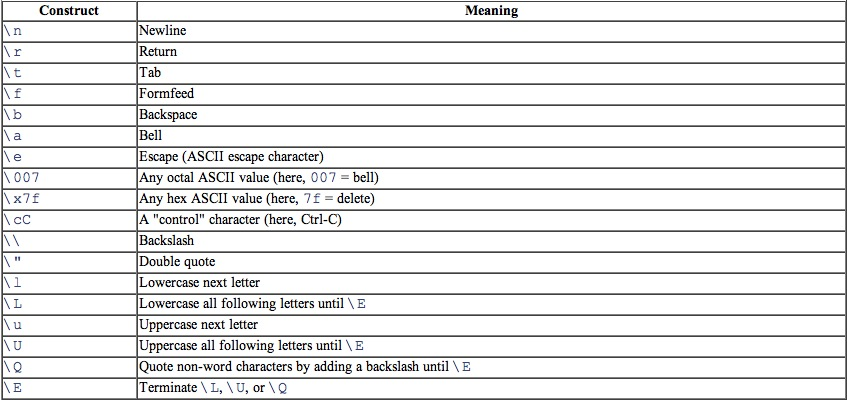
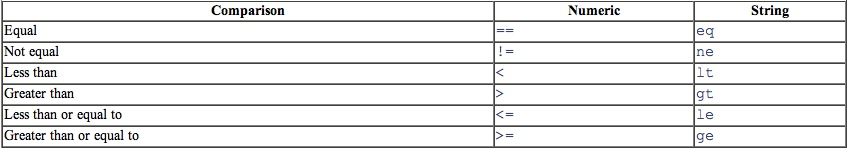
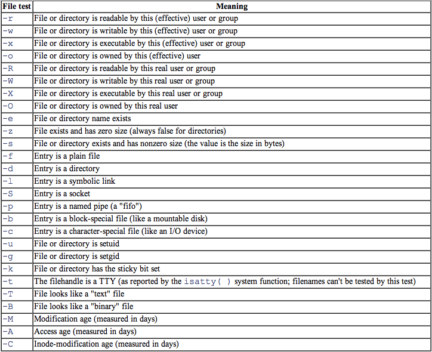
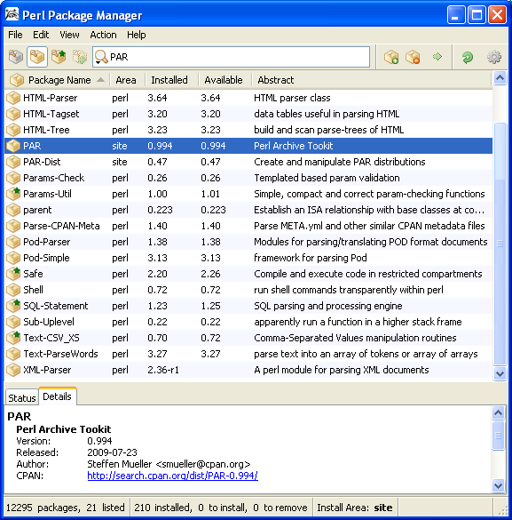

Introduction à Perl
Contents
- 1 Introduction
- 2 Bases
- 3 Boucles
- 4 Fonctions utiles
- 5 Tableaux
- 6 Fonctions
- 7 use strict
- 8 Hachages
- 9 Entrées/Sorties
- 10 Regex
- 11 Structures de contrôles plus complexe
- 12 Handles et tests de fichiers
- 12.1 Lancements de programmes
- 12.2 Ouverture d'un handle
- 12.3 Fermeture d'un handle
- 12.4 Problèmes de handle
- 12.5 Lecture d'un bloc de texte
- 12.6 Avertissements avec warn
- 12.7 Utilisation des handles de fichiers
- 12.8 Les HEREDOC
- 12.9 Remplacement du handle de fichier de sortie par défaut
- 12.10 Réouvertre d'un handle de fichier standart
- 12.11 Tests de fichiers
- 12.12 Les fonctions stat et lstat
- 12.13 Localtime
- 12.14 Opérateurs bits à bits
- 12.15 Utilisation du handle de fichier spéciale "_"
- 13 Opérations sur les répertoires
- 14 Manipulation des fichiers et des répertoires
- 14.1 Supression de fichiers
- 14.2 Renommer des fichiers
- 14.3 Liens et fichiers
- 14.4 Création et suppression des répertoires
- 14.5 Déterminer le processus
- 14.6 Modification des permissions
- 14.7 Changement du propriétaire
- 14.8 Modification de la date et de l'heure
- 14.9 Le module File::Basename
- 14.10 N'utiliser que certaines fonctions d'un module
- 14.11 Le module File::Spec
- 15 Gestion des processus
- 16 Chaînes et tris
- 17 Bases de données simples
- 18 Quelques techniques Perl avancées
- 19 Plus loin dans Perl
- 20 Mémos
- 21 Ressources
1 Introduction
Cette documentation est vraiment faite pour des personnes ayant de bonnes connaissances en développement, puisque ce sont simplement des notes des syntaxes de Perl, et sur le fonctionnement de celles-ci.
Perl est un langage de programmation créé par Larry Wall en 1987 et reprenant des fonctionnalités du langage C et des langages de scripts sed, awk et shell.
Larry Wall donne deux interprétations de l'acronyme "PERL":
- Practical Extraction and Report Language ou langage pratique d'extraction et de génération de rapports
- Pathetically Eclectic Rubbish Lister ou collectionneur de déchets pathétiquement éclectiques
Ces noms sont des rétro-acronymes.
L'association en charge du développement et de la promotion de Perl est The Perl Foundation. En France, les Mongueurs de Perl promeuvent ce langage, notamment via les Journées Perl.
2 Bases
Les exposants :
7.5e-24 # donne 7.5 exposant 10 x -24
Ecriture simplifiée des litéraux entiers :
123456789 # On peut écrire aussi 123_45678_9
Voici les chaines de caractère d'échappement :

{kind=link}
Opérateurs de chaine (concaténation) :
"hello" . "world" # équivaut à "helloworld" "hello" . ' ' . "world" # équivaut à 'hello world' 'hello world' . "\n" # équivaut à "helloworld\n" "fred" x 3 # équivaut à "fredfredfred" "5 * 3" # équivaut à 15
Attenttion au opérateurs de chaine pour les nombres :
"5" x 4 # équivaut à "5555"
Opérateur d'affectation binaire :
$fred = $fred + 5 # Peut s'écrire $fred += 5
A éviter :
print "$fred" -> print $fred
Précédence et associativité des opérateurs :

Opérateurs de comparaison :

{kind=link}
3 Boucles
3.1 If
Voici la structure d'un if :
if ($mytruc gt 'toto') { print "'$mytruc' est plus grand que toto.\n"; } else { print "'$mytruc' est plus petit que toto.\n"; }
Pour avoir STDIN en tant que variable scalaire (Rappel: STDIN sert à utiliser ce que l'utilisateur va taper sur le clavier) :
$line = <STDIN>; if ($line eq "\n") { print"Ceci n'était qu'une ligne vide !\n"; } else { print "Cette ligne de saisie était : $line"; }
3.2 while
Voici la structure d'un while :
$total = 0; while ($total < 10) { $total += 1; print "total vaut désormais $total\n"; # donne les valeurs de 1 à 10 }
4 Fonctions utiles
4.1 Defined
Vérifie si une valeur est définie ou non
$bre1 = <STDIN>; if (defined($bre1) ) { print "la saisie est $bre1"; } else { print "aucune saisie diponible !\n"; }
4.2 Chomp
Il supprime les caractères de nouvelle ligne :
$text = "une ligne de texte\n"; chomp($text);
5 Tableaux
Voici l'entrée de la ligne 0 d'un tableau :
$tab[0] = "test";
Et voilà comment on peut calculer une ligne de tableau :
$tab[5 - 0.4] = "test"; # Soit $tab[4]
Pour créer 99 éléments undef (non définit) :
$tab[99] = "test";
Pour définir le dernier élément du tableau, il y a 2 manières :
$tab[$#tab] = 'test'; $tab[-1] = 'test';
Pour connaitre le nombre de colonnes dans un tableau :
my $numbers = @tab;
Maintenant $numbers contient le nombre de colonnes.
Pour vider un tableau :
@tab = ();
5.1 Listes
Voici un exemple de listes :
(1..5, 7) # de 1 à 5 et 7;
5.1.1 qw
Si par exemple nous souhaitons avoir une liste de ce type :
("toto", "tata", "titi")
Pour simplifier les choses, nous pouvons faire ceci :
qw/ toto tata titi /
On peut remplacer / par !, #, (), {}, [] ou <>.
L'avantage d'utilser ces écritures, c'est que cela peut être malformé par des espaces ou nouvelles lignes, elles seront automatiquement ignorées, et vos mots seront par contre eux pris en compte. Voici donc un autre forme d'écriture possible :
qw{ /usr/dict/words; /home/root/.ispell_french; }
On peut faire aussi :
@nombre = qw(un deux trois);
5.1.2 Affectations de listes
Pour affecter des listes :
($toto, $tata, $titi) = ("un", "deux", "trois");
Ici donc toto vaut un, tata vaut deux...
On peut permuter de cette façon :
($toto, $tata) = ($tata, $toto);
Attentin aux éléments ignorés du type :
($toto, $tata) = qw<un deux trois quatre>;
Ici, seuls les 2 premiers seront pris en compte. Pour l'inverse :
($toto, $tata) = qw<un>;
$tata aura une valeur undef.
5.2 pop
Pop sert à retirer des éléments se trouvant à la fin d'un tableau :
@tab = 5..9 # mon tableau va de 5 à 9 $toto = pop(@tab); # $toto va recevoir 9, et le tableau n'aura plus que 5,6,7 et 8 $tata = pop @tab # idem, donc $tat à 8 et le tableau s'arrête à 7 pop @tab; # le 7 est jetté
Lorsque le tableau est vide, pop renvoie undef.
5.3 push
Push sert à ajouter à la fin des tableau des valeurs supplémentaires :
push (@tab, 0); # le tableau vaut mainteant 6, 7 et 0 push @tab, 1..10 # @tab en contient maintenant 10 nouveaux
5.4 shift
Shift est comme pop mais agit au début du tableau :
@tab = qw<tata toto titi>; $myshift = shift @tab; # @tab contient alors toto et titi.
5.5 unshift
Unshift est comme push, mais agit au début du tableau :
unshift @tab, tata # Maintenant, mon tableau redevient tata, toto, titi
5.6 foreach
Un foreach va permettre de parcourir une liste complète :
@total = qw/toto titi tata/; foreach $toutou (@total) { print "$toutou\n"; }
5.7 $_
Voici je pense la variable par défaut la plus utilisée dans Perl. Elle permet de ne pas déclarer de variables dans une boucle. Par exemple :
foreach (1..10) { # Utilisation par défaut de $_
print "Je sais compter jusqu'à $_!\n";
}
Autre exemple :
$_ = "Mon test\n"; print; # affiche par défaut la variabe $_
5.8 reverse
Reverse prends une liste de valeurs et renvoie la liste dans l'ordre inversée :
@num = 6..10; @tab1 = reverse(@num); # renvoie 10,9,8,7,6. @tab2 = reverse 6..10; # Idem mais sans aller chercher dans le tableau. @num = reverse(@num); # Remplace directement dans le tableau d'origine. @inverse = reverse qw/ tata toto titi/; # donne tata titi toto $inverse = reverse qw/ tata toto titi/; # donne ototititatat
5.9 sort
Tout comme le binaire sort sur les unix, il trie par ordre alphabétique (mais ASCII) :
@planetes = qw/ terre saturne mars pluton /; @triee = sort(@planetes); # donnera mars, pluton, saturne et terre. @triee = sort @planetes; # Idem @inverse = reverse sort(@planetes); # inversera le résultat ci dessus.
5.10 Contexte de liste et de scalaire
Il est important de comprendre cette section :
5 + x # x doit être un scalaire sort x # x doit être une liste
@personnes = qw( toto tata titi); @triee = sort @personnes; $nombre = 5 + @personnes # donne ici 5 + 3 $n = @personnes; # donne 3
Pour forcer un contexte scalaire :
print "Je ", scalar @tab, " force le scalaire\n";
6 Fonctions
On définit avec sub :
sub way { $n += 1; print "Le numéro de metro est : $n\n"; }
Et on appelle la fonction avec une esperluète (&) :
&way; # Affichera : Le numéro de metro est : 1 &way; # Affichera : Le numéro de metro est : 2
Voici un exemple :
my @c; sub liste_de_toto_a_titi { if ($toto < $titi) { # Enumère en montant de toto à titi push @c, $toto..$titi; } else { # Enumère en descendant de toto à titi push @c, $titi..$toto; } } $toto = 11; $titi = 6; @c = &liste_de_toto_a_titi; # @c recoit (11,10,9,8,7,6) print @c;
6.1 Arguments de fonctions
Nous allons passer 2 arguments pour une fonction :
$n = &max(10,15);
Et nous allons appeller dans la fonction les 2 arguments avec $_[1] ou $_[2] (mais uniquement dans la fonction !) qui font partie de la liste @_. Ces variables n'on rien à voir avec la variable $_. Voici un exemple :
sub max { if ($_[0] < $_[1]) { $_[0]; } else { $_[1]; } }
Si il y a une valeur qui est appelée et non définie, alors elle sera mis en undef.
Pour être sur de recevoir le nombre exact d'arguments :
sub max { if (@_ != 2) { print "Attention ! &max devrait recevoir 2 arguments\n"; } }
6.2 my
La valeur my permet de créer des variables privées. Déclarée dans une fonction, elle sera appelée dans la fonction et à la fin, elle sortira de la mémoire.
sub max { my ($a, $b); # nouvelles variables privées pour ce bloc ($a, $b) = @_; # donne les noms aux paramètres if ($a > $ b) { $a } else { $b } }
Nous pouvons simplifier les choses :
my($a, $b) = @_;
6.3 local
Local est l'ancien nom de my, sauf que local sauvegarde une copie de la valeur de la variable dans un endroit secret (pile). Cette valeur ne peut pas être consultée, modifiée, ou supprimée tant qu'est est sauvegardée. Puis local initialise la variable à une valeur vide (undef pour les scalaires, ou liste vide pour les tableaux), ou la valeur affectée. Au retour de la fonction, la variable est automatiquement restaurée à sa valeur d'origine. En somme, la variable a été empruntée un temps rendu avant que quiconque s'en soit aperçu.
Vous ne pouvez pas remplacer local par my dans de vieux scripts perl, mais n'oubliez pas d'utiliser de préférence my lorsque vous créez de nouveaux scripts. Ex :
local($a, $b) = @_;
6.4 return
Return va renvoyer la valeur d'une fonction. Par exemple, return, placé dans un foreach va renvoyer une valeur lorsqu'elle aura été trouvée.
7 use strict
Pour faire du code "propre", il est préférable de mettre ceci dans vos scripts :
use strict;
8 Hachages
Une table de hach (ou hachage) est comme un tableau sauf qu'au lieu d'avoir des nombres comme repères, nous allons avoir des clefs.
{kind=link}
L'avantage c'est que ces clefs, nous allons les définir. Au cas où ce n'est pas assez clair, voici la différence :
- Tableau :
| Identifiant ou clef (non modifiable) | 0 | 1 | 2 |
|---|---|---|---|
| Valeur (modifiable) | tata | titi | toto |
- Table de hach :
| Identifiant ou clef (modifiable) | IP | Machine | Nom |
|---|---|---|---|
| Valeur (modifiable) | 192.168.0.1 | toto-portable | Toto |
On déclare une table de hach de cette façon :
$mon_tableau_de_hash{"identifiant"} = "valeur";
Pour copier une colonne :
$mon_tableau_de_hash{"identifiant1"} .= $mon_tableau_de_hash{"identifiant2"};
C'est Perl qui décide de la disposition des clefs dans la table de hash. Vous n'aurez pas vous même la possibilité de le organiser comme vous le souhaitez ! Cela permet en outre à Perl d'accéder plus rapidement aux informations que vous recherchez.
8.1 Liste
Pour déclarer une liste de hash on peut faire :
%list_hash = ("IP", "192.168.0.1", "Machine", "toto-portable", "Nom", "Toto");
Il existe une autre manière, et beaucoup plus claire de faire des déclarations de liste :
my %list_hash = ( "IP" => "192.168.0.1", "Machine" => "toto-portable", "Nom" => "Toto", );
Nous pouvons laisser sur la dernière liste de ligne la virgule sans problème. Ce qui peut être pratique dans certains cas :-).
8.1.1 reverse
Le reverse au niveau des listes de hachage va s'avérer très utile ! En effet, comme vous le savez, pour effectuer des recherches, nous pouvons seulement prendre les clefs pour trouver les valeurs. Si nous voulons faire une recherche dans le sens inverse (les valeurs deviennent les clefs, et les clefs deviennent les valeurs) :
%list_hash_inversed = reverse %list_hash;
Mais ne croyez pas que celà ne prends pas de ressources, car contrairement à ce que l'on pourrait penser, une copie de liste fait un déroulement complet, puis une copie un à un de tous les éléments. C'est exactement pareil pour une copie simple d'une liste :
%hash1 = %hash2;
Malheureusement, encore une fois, celà fait extrêmement travailler Perl ! Donc si vous avez la possibilité d'éviter ce genre de choses, c'est bien :-).
8.2 Fonctions de hashage
8.2.1 Keys et values
Keys et values sotn 2 fonctions de hash qui permettent de revoyer que les clefs ou que les valeurs :
%list_hash = ("IP", "192.168.0.1", "Machine", "toto-portable", "Nom", "Toto");
my @keys = keys %list_hash;
my @values = values %list_hash;
Ici @keys comprendra IP, Machine et Nom, tandis que @values comprendra le reste.
Sous forme scalaire, cela nous donnera le nombre d'éléments dans keys et dans values !
Note: Si une valeur est vide elle sera considérée comme false.
8.2.2 each
Pour parcourir un hashage entier, nous allons utiliser each qui renvoie une paire de clef/valeur sous forme de liste à 2 éléments :
while ( ($cle, $valeur) = each %hachage ) {
print "$cle => $valeur\n";
}
8.2.3 exists
Pour connaitre l'existance d'une clef dans un hash :
if (exists $nom{"192.168.0.1"}) {
print "Il existe un nom pour l'adresse IP 192.168.0.1 !"\n;
}
8.2.4 delete
La fonction delete va supprimer la clef en question :
my $dhcp{nom}='toto';
delete $dhcp{$nom};
Note : cela n'équivaut pas à insérer un undef dans un élément du hashage.
8.2.5 Références
Voici comment retourner des références de hashage :
sub foo { my %hash_ref; $hash_ref->{ 'key1' } = 'value1'; $hash_ref->{ 'key2' } = 'value2'; $hash_ref->{ 'key3' } = 'value3'; return $hash_ref; } my $hash_ref = foo(); print "the keys : %$hash_ref\n";
9 Entrées/Sorties
9.1 L'opérateur Diamant
Cet opérateur permet de faire fusionner plusieurs entrées en un gros fichier :
while (<>) { chomp; print "Cette ligne provient de $_ !\n" }
Cet opérateur est généralement utilisé pour traiter toute l'entrée. L'utiliser plusieurs fois dans un programme constituerais une erreur.
9.1.1 @ARGV
@ARGV est un tableau contenant les arguments d'appel. L'opérateur diamand lira d'abord le tableau @ARGV, si la liste est vide, il lira l'entrée standard sinon la liste des fichiers qu'il trouvera.
9.2 Sortie standard
Normalement, vous l'avez compris, il existe des différences entre afficher et interpoler :
print @tab; # affiche une liste d'éléments print "@tableau" # affiche une chaîne (contenant un tableau interpolé)
9.3 printf
Printf permet de mieux controler la sortie. Pour afficher un nombre de façon généralement correcte, nous utiliserons %g, qui sélectionne auomatiquement la notation décimale, entière ou exponentielle :
printf "%g %g", 6/2, 51 ** 17; # Ca nous donnera 3 1.0683e+29
%d signifie un entier décimale :
printf "%d fois plus", 15.987690987; # Donne 15 fois plus
Printf est souvent utilisé pour présenter des données en colonne. Nous allons donc définir des espaces :
printf "%6d\n", 32; # Donne " 32"
Nous avons donc ici 4 espaces puis le chiffre 32 qui donne 6 caractères.
Pareil avec %s qui est dédié aux chaines :
printf "%10s\n", toto; # " toto"
Si nous passons le 10 au négatif, nous aurons un alignement à gauche :
printf "%-10s\n", toto; # "toto "
Avec les nombres %f, il est donc capable de tronquer :
printf "%12f\n", 6 * 7 + 2/3; # " 42.666667" printf "%12.3f\n", 6 * 7 + 2/3; # " 42.667", ici, je lui ai dis d'arrondir à 3 chiffres après la virgule
Si l'on veut que le signe % y soit mensionner alors il faut avoir %% :
printf "Mon pourcentage est de %.2f%%\n"; 5.25/12; # résultat : "0.44%"
Dans le cas où nous souhaitons entrer en STDIN la valeur à tronquer, il ne faut pas oublier d'interpoler celle ci :
printf "%${valeur}s\n", $_
Pour plus d'informations : http://perldoc.perl.org/functions/sprintf.html
10 Regex
Regex ou expressions régulières sont comme un autre language à apprendre, qui permettent très facilement d'avoir accès à des outils très sofistiqués.
Si par exemple, nous souhaitons faire une recherche et afficher l'expression correspondante (équivalent au grep) :
$_ = "tata titi toto";
if (/tot/) {
print "Correspondance trouvée !";
}
10.1 Métacaractères
Les métacaractères servent à pousser encore plus loin les recherches. Si je reprends l'exemple du dessus :
if (/t.t/) {
Le caractère "." signifie n'importe quoi. Donc ici, ca match avec tata, titi et toto. Si vous voulez réèlement utilise le "." et ne pas qu'il passe en regex, il faut utiliser le métacaractère "\".
Ce qui donne "\." :
3\.15 # Donne 3.15
10.2 Quantificateurs
Le signe * signifie que le caractère précédent est répété x fois ou pas du tout :
/toto\t*titi/ # Cette recherche peu comporter de 0 à x tabulations entre toto et titi
Si l'on souhaite n'importe quoi entre toto et titi, il suffit de rajouter un "." :
/toto.*titi/ # Recherchera "toto'n importe quoi'titi"
Pour répéter l'élément précédent 1 ou plusieurs fois, on utilise "+" :
/toto +titi/ # Peut donner "toto titi" mais pas "tototiti"
Le ? indique que ce n'est pas obligatoire :
/toto-?titi/ # Donne tototiti ou toto-titi
10.3 Regroupements
On peut regrouper avec des () :
/toto+/ # Peut faire totooooooooo /(toto)+/ # Peut donner totototototototo
10.4 Pipe
Le pipe sert à désigner un élément ou un autre :
/toto|titi|tata/ # Cherchera toto ou titi ou tata
Si l'un d'eux correspond, alors il est prit. Si on veut rechercher espaces ou tabulations :
/( +|\t+)/
10.5 Classes de caractères
- Pour désigner des tranches ou quelques lettres ou chiffres, on va utiliser [] :
[a-c] # Donne a,b et c [a-cw-z] # Donne a,b,c,w,x,y et z [1-6] # Donne de 1 à 6 [a-zA-Z] # L'alphabet en minuscule et majuscule
Pour éviter certains caractères, il faut rajouter ^ :
[^a-c] # Tout sauf a,b et c
Maintenant, encore plus fort ! Certaines classes apparaissent si souvent qu'elles ont été encore simplifiées :
| Opérateur | Description | Exemple |
|---|---|---|
| ^ | Début de ligne | ^Deimos pour 'Deimos Fr !!!' |
| $ | Fin de ligne | !$ pour 'Deimos Fr !!!' |
| . | N'importe quel caractère | d.im.s pour 'Deimos Fr !!!' |
| * | Répétition du caractère précédent de 0 à x fois | !* pour 'Deimos Fr !!!' |
| + | Répétition du caractère précédent de 1 à x fois | !+ pour 'Deimos Fr !!!' |
| ? | Répétition du caractère précédent de 0 à 1 fois | F? pour 'Deimos Fr !!!' |
| \ | Caractère d’échappement | \. pour 'Deimos Fr\.' |
| a,b,...z | Caractère précis | Deimos pour 'Deimos Fr' |
| \w | Caractère alphanumérique (a...z,A...Z,0...9) | \weimos pour 'Deimos Fr' |
| \W | Tout sauf un caractère alphanumérique | I\Wll pour 'I'll be back' |
| \d | Un chiffre | \d pour 1 |
| \D | Tout sauf un chiffre | \Deimos pour Deimos |
| \s | Un caractère d'espacement tel que : espace, tabulation, retour chariot ou saut de ligne (\f,\t,\r,\n) | 'Deimos\sFr' pour 'Deimos Fr' |
| \S | Tout sauf un caractère d'espacement | 'Deimos\SFr' pour 'Deimos Fr' |
| {x} | Répète le caractère précédent exactement x fois | !{3} dans 'Deimos Fr !!!' |
| {x,} | Répète le caractère précédent au moins x fois | !{2} dans 'Deimos Fr !!!' |
| {, x} | Répète entre 0 et x fois le caractère précédent | !{3} dans 'Deimos Fr !!!' |
| {x, y} | Répète entre x et y fois le caractère précédent | !{1, 3} dans 'Deimos Fr !!!' |
| [] | Permet de mettre un range (de a à z[a-z], de 0 à 9[0-9]...) | [A-D][0-5] dans 'A4' |
| [^] | Permet de spécifier des caractères non désirés | [^0-9]eimos dans 'Deimos' |
| () | Permet d'enregistrer le contenu des parenthèses pour une utilisation ultérieure | (Deimos) dans 'Deimos Fr' |
| | | Permet de faire un ou exclusif | (Org|Fr|Com) dans 'Deimos Fr' |
Il existe un site permettant de visualiser une regex : Regexper (sources : https://github.com/javallone/regexper)
Du coup :
/toto \w+ titi/ # Donnera toto, espace, un mot (quelquonque), espace et titi
C'est pas butifull ça ? Pour représenter un espace, nous pouvons aussi utiliser \s :
/toto\s\w+\stiti/
- Maintenant, si nous souhaitons les inverses :
[^\d] # Tout sauf des chiffres
ou nous pouvons utiliser les majuscules :
\D
Pas mal hein ! :-)
On peut également trouver [\d\D] qui signifie n'importe quel chiffre ou non chiffre (contrairement au . qui est identique sauf que le . n'accepte pas les nouvelles lignes).
10.6 Quantificateurs généraux
Si l'on veut faire correspondre plusieurs fois un motif :
/a{5,15}/ # "a" pourra être répété entre 5 et 15 fois
/a{3,}/ # "a" pourra être répété de 3 à l'infini
Ce qui peut donner par exemple, si nous cherchons un mot à 8 caractères :
/\w{8}/
10.7 Ancres
Comme il n'exite trop peu de caractères, certains sont réutilisés :
| Recherches | Ancres |
|---|---|
| Début d'une ligne | /^Mon\sdébut/ |
| Fin d'une ligne | /ma\sfin$/ |
10.7.1 Ancres de mot
Pour définir un mot entier, nous utiliserons \b :
/\btoto\b/ # Ne recherera que "toto"
Pour inverser l'ordre des choses, donc si nous voulons tout sauf toto :
/\Btoto\B/
Mais on peut vouloir titine et titi :
/\btiti/ # Equivalent à titi.*
Super-timore, encore plus fort :
/\bsearch\B/ # Correspondra à searches, searching et searched, mais pas search ou research
10.8 Paranthèses de mémorisation
Un bon exemple et on comprends mieux. Si on utilise :
/./ # On localise n'importe quel caractère individuel sauf la nouvelle ligne
Pour mémoriser cette regex, nous utiliserons les paranthèses :
/(.)/ # Là il y a mémorisation
Pour en faire référence, nous utiliserons :
/(.)\1/ # Ceci contiendra la première mémoire des regex
Ceci n'est pas simple à comprendre mais cela va chercher un caractère identique à la recherche précédente
Par exemple si nous avons du code HTML :
<image source='toto.png'> <image source="toto-l'artichaud.png">
Nous pouvons ici faire notre recherche avec ceci :
/<image source=(['"]).*\1>/ # le *\1 indique que nous utilisons la première mémoire de l'expression régulière. Elle est donc répétée à son appel (\1).
Etant donné la complexité de la chose, je vais essayer de montrer de bons exemples. Tout d'abord, il faut compter les parenthèses ouvrantes, c'est ce qui sera notre numéro de mémoire regex ( ex: ((... = 2, car 2 parenthèses ouvrantes) :
/((toto|titi) (tata)) \1/ # Peut correspondre à toto tata toto tata ou titi tata titi tata
/((toto|titi) (tata)) \2/ # Peut correspondre à titi tata titi ou toto tata toto
/((toto|titi) (tata)) \3/ # Peut correspondre à toto tata tata ou titi tata tata (même si ce genre d'expression est rare)
/\b((toto|titi)\s+tata\b\b/ # Permet de chercher exactement ces mots (et pas totototo par exemple
/^b[\w.]{1,12}\b$/ # Correspond ) des chaines de lettres, ne se terminant jamais par un . et au maximum 12 caractères.
10.9 Paranthèses de non mémorisation
Si vous souhaitez utiliser les parenthèse sans que celles ci soient stocker en mémoire, il faut utiliser ces symboles "?:" comme ceci :
if (/(?: toto|tata) est en train de jouer/) { print "Quelqu'un est en train de jouer"; }
Ici, on ne stockera donc pas toto ou tata.
10.10 Utilisation des regex
Tout comme nous avon vu avec l'opérateur qw//, il est possible de faire la même chose pour les correspondances avec m// :
m(toto)
m<titi>
m{tata}
Bref, les possibilités sont ^,!(<{[ ]}>)!,^. Le raccourci m// n'est pas obligatoire avec les double //.
10.10.1 Ignorer la casse
Pour ignorer la casse, il existe /i :
/toto\n/i # La correspondance peut être donc toto ou TOTO, voir ToTo...etc...:-)
10.10.2 Ignorer les espaces et commentaires
Si vous souhaitez ignorer tous les espaces et commentaires dans votre code, ajoutez /x :
/ toto # \n/x
10.10.3 Correspondance de n'importe quel caractère
Le fait que le . ne corresponde pas à un caractère de nouvelle ligne peut être génant. C'est pourquoi /s est utile. Par exemple :
$_ = "Voici :\ntoto\ntiti\ntata.\n"; if (/\btoto\b.*\btiti\b/s) { print "Cete chaine indiue toto après titi !\n" }
Nous pouvons même faire des combinaisons :
if (/\btoto\b.*\btiti\b/si) { # Nous combinons ici /s et /i
10.10.4 Recherche jusqu'à un caractère précis
J'ai pas mal galérer avec cette regex avant de la trouver. Si par exemple, j'ai une ligne du style :
<task id="3" name="Cacti" color="#8cb6ce" meeting="false" start="2010-04-26" duration="65" complete="0" priority="1" expand="true">Et que je souhaites rechercher le contenu de name :
/name="(.*)"/
Cette regex ne suffira pas car ça me donnera :
Cacti" color="#8cb6ce" meeting="false" start="2010-04-26" duration="65" complete="0" priority="1" expand="true">
Pour palier au problème, voici la solution :
/name="(.*?)"/
J'ai simplement mis un ? qui va demander de chercher pas jusqu'a la dernière ", mais jusqu'à la première !
10.10.5 L'opérateur de liaison =~
La correspondance avec $_ est celle par déaut :
my $qqun = "La personne en question est toto."; if ($qqun =~ /\btoto/) { print "Là les choses se compliquent"; }
Si aucuns opérateur de liaison n'est indiqué, il travaillera avec $_.
Voici un autre exemple de correspondance, mais avec les mémoires d'expression régulières :
$moi = "Pour le moment j'ai vécu 24 ans !"; if ($moi =~/(\d*) ans/) { print "J'ai donc $1 ans\n"; }
Un dernier :
$_ = "toto tata, titi"; if (/(\S+) (\S+), (\S+)/) { print "Voici les prénoms : $1 $2 $3"; }
La mémoire reste intacte jusqu'à ce qu'il y ai coorespondance, alors qu'une correpondance réussie les réinitialises toutes. Si vous commencez à trop jouer avec les mémoires, vous risquez d'avoir des surprises. Il est donc conseiller de les stocker dans des variables :
if {$toto =~ /(\(w+)/) { my $recherche_toto = $1; }
Maintenant, attention, on va voir le genre de choses que je trouves géniale avec Perl :
if ("Voici toto, tata et titi" =~ /,\s(\w+)/) { print "La correspondance est '$&'.\n"; # Soit ", tata" }
$& : est la correspondance
$` : ce qui se situe avant la correspondance
$' : ce qui se situe après la correspondance
Par conclusion, si nous volons la chaine d'origine :
print "La chaine d'origine est : ($`)($&)($').\n";
Ces variables "magiques" ont un prix ! Elles ralentissent les expressions régulières suivantes. Ce qui peut donc faire perdre quelques millisecondes...minutes, suivant votre programme. Apparement, ce problème est corrigé dans Perl 6.
Si vous avez donc la possibilité d'utiliser les numérotation à la place de ces regex, n'hésitez pas !
Sachez que vous pouvez obtenir encore plus d'infos sur les regex ici : http://www.perl.com/doc/manual/html/pod/perlre.html
10.11 Substitution
Pour substituer (remplacer), nous utiliserons s/// :
$_ = "Toto jour a la Wii avec titi ce soir"; s/titi/tata/; # Remplace titi par tata s/avec (\w+)/contre $1/; # Remplace "avec titi" par "contre titi"
Ou bien, plus simplement :
my $toto = 'TOTO'; my $titi = "\L$toto"; print "$titi\n";
Maintenant, des exemples un peu plus complexe :
$_ = "bumbo, petite automobile";
- Pour une substitution globale, c'est à dire sur toutes les occurences trouvées, il suffit de rajouter "g" :
$_ = "bumbo, joli bumbo !"; s/bumbo/auto/g; print "$_\n";
Il est possible d'utiliser d'uatres délimiteurs (comme pour m et qw) tel que "{}, [], <>, ##" :
s<^https://>(http://);
Il est également possible de combiner "g" à une autre (comme la sensibilité à la casse par exemple) :
s{https://}[http://]gi;
- Pour remplacer par des majuscules, il faut utiliser \U :
s/(toto|titi)/\U$1/gi; # Donnera TOTO ou TITI
- Pour remplacer par \L pour avoir que des minuscules :
s/(toto|titi)/\L$1/gi; # Donnera toto ou titi
- On peut désactiver la modification de la casse avec \E :
s/(\w+) avec (\w+)/\U$2\E avec $1/i; donnera TOTO avec titi
- Ecris en minuscule (\l et \u), ces échappements n'affectent que le caractère suivant :
s/(toto|titi)/\u$1/gi; # Donnera Toto ou Titi
On peut également les combiner pour que tout soit en minuscule sauf la première lettre :
s/(toto|titi)/\u\L$1/gi; # Donnera Toto ou Titi
On peut même faire ça dans un simple print :
print "Son nom est \u\L$nom\E\n";
10.12 split
Split permet de faire du découpage par rapport à un espace, une tabulation, un point... à peu prêt n'importe quoi suaf les virgules :
@champs = split /séparateur/, $chaine;
Split déplace le motif dans une chaîne et renvoie la liste des champs séparés per les séparateurs. A chaque correspondance du motif correspond la fin d'un champ et le début d'un autre :
@champs = split /:/, "abc:def:ij:k::m"; # Donnera ("abc", "def", "ij", "k", "", "m")
Comme je le disais plus haut, il est également possible de faire des séparations avec des espaces :
my $phrase = "Voici ma ligne\t d'espaces.\n"
my @args = split /\s+/, $phrase; # Donne ("Voici", "ma", "ligne", "d'espaces."
Par défaut, si aucunes options de séparation n'est spécifiée, c'est "\s+" qui sera utilisé.
10.13 join
Join fonctionne exactement comme split sauf que son résultat donnera l'inverse de split. Il joindra des bouts (avec ou non) des séparateurs :
my @mac = join ":", 00, AB, EF, EF, EF, EF; # Donnera 00:AB:EF:EF:EF:EF
ou encore :
my $mac = join ":", 00, AB, EF, EF, EF, EF; # Donnera 00:AB:EF:EF:EF:EF
11 Structures de contrôles plus complexe
11.1 unless
Unless est l'inverse du if, c'est à dire qu'on rentrera dans la boucle si l'expression rechercée n'est pas la bonne. C'est en fait l'équivalent d'un else dans une boucle if. Cal équivaut aussi à rendre un if négatif :
if ( ! ( $toto =~ /Â-Z_]\w*$/i) ) <--> unless ($toto =~ /Â-Z_]\w*$/i)
Il est aussi, tout comme un if d'utiliser else avec unless, mais je vous le déconseil car c'est souvent source d'erreurs.
11.2 until
Si vous souhaitez inverser la condition de la boucle while :
until ($j > $i) {
$j *= 2;
}
Ceci est en fait une boucle while déguisée qui se répète tant que la condition est fausse.
11.3 Modificateurs d'expression
Pour avoir une notation plus compacte, une expression peut être suivit d'un modificateur qui la contrôle :
print "$n est un nombre négatif.\n" if $n < 0;
&error("Entrée invalide") unless &valid($entree);
$i *= 2 until $i > $j;
print " ", ($n += 2) while $n < 10;
&saluer($_) foreach @personne;
11.4 Bloc nu
Ceci est un bloc nu :
{
corps;
corps;
corps;
}
C'est un bloc qui sera exécuté qu'une fois. L'avantage c'est que nous pouvons créer des variables, mais qui ne seront conservées que dans ce bloc.
11.5 elsif
Dans une boucle if, si nous voulons avoir plusieurs solutions, nous pouvons utiliser elsif :
if ( ! defined $toto) {
print "La valeur est undef.\n";
} elsif ($toto eq '') {
print "La valeur est uen chaine.\n";
else {
...
}
Nous pouvons mettre autant de elsif que nous voulons (voir perlfaq pour émuler des case ou switch).
11.6 Auto Incrémentation/Décrémentation
Comme en C, pour incrémenter par exemple une variable :
my $a = 5; my $b = $a++; # pour s'écrire aussi ++$a
Idem avec "--" pour décrémenter
11.7 for
For est assez classique et ressemble au C encore une fois :
for ($i = 1; $i <=10; $i++) {
print "Je sais compter jusqu'à $i!\n";
}
Autre exemple. imaginons que nous voulons compter de -150 à 1000 mais par saut de 3 :
for ($i = -150; $i <= 1000; $i +=3) {
print "$i\n";
}
Sinon, une simple boucle for pour une recherche qui réussi :
for ($_ = "toto"; s/(.)//; ) {
print "$1 est trouvé ici\n";
}
Attention aux boucles infinies si vous utilisez des variables :
for (;;) {
print "Boucle infinie\n";
}
Si vraiment vous voulez écrire une boucle infinie, la meilleure façon est celle ci :
for (1) {
print "Boucle infinie\n";
}
11.8 foreach
La boucle et for et foreach sont identiques sauf que si il n'y a pas de ";", c'est une boucle foreach :
for (1..10) { # En réalité une boucle foreach de 1 à 10 print "Je sais compter jusqu'à $_!\n"; }
Il s'agit donc d'une boucle foreach mais écrite avec un for.
11.9 Contrôles de boucle
"last" permet de terminer une boucle immédiatement (comme break en C ou shell) :
while (<STDIN>) { if (/_END_/) { last; } elsif (/fred/) { print; } }
Dès qu'une ligne comporte le repère "__END__", la boucle se termine.
11.10 next
Parfois, vous n'êtes pas préparé à ce que la boucle se termine, mais vous avez terminé l'itération en cours. C'est là que "next" intervient ! Il saute vers l'intérieur du bas de la boucle, puis il passe à l'itération suivante de la boucle :
while (<>) { foreach (split) { # divise $_ en mots, en affectant chacun à $_ ) tour de rôle $total++; next if /\W/; # les mots étranges sautent le reste de la boucle $valides++; $compte{$_}++; # compte chaque mot individuel ## next conduit ici ## } } print "totalité = $total, mots valides = $valides\n"; foreach $mot (sort keys %compte) { print "$mot a été rencontré $compte{$mot} fois.\n"; }
11.11 redo
Redo indique de revenir au début du bloc de la boucle en cours sans allez plus loin dans la boucle :
my @mots = qw{ toto tata titi}; my $erreurs = 0; foreach (@mots) { ## redo revient ici ## print "Saisir le mot '$_': "; chomp(my $essai = <STDIN>); if ($essai ne $_) { print "Désolé - Il y a une erreur.\n\n"; $erreurs++; redo; # retourne en haut de la boucle } } print "Vous avez terminé le test avec $erreurs erreurs.\n";
Un petit test pour bien comprendre :
foreach (1..10) { print "Itération numéro $_.\n\n"; print "Choisissez : last, next, redo ou aucun"; chomp(my $choix = <STDIN>); print "\n"; last if $choix =~ /last/i; next if $choix =~ /next/i; redo if $choix =~ /redo/i; print "Ce n'était aucun des choix... enavant !\n\n"; } print "C'est fini, les gars !\n";
11.12 Blocs libellés
Les bloc libellés servent à travailler avec des bloc de boucles. Il sont faits de lettres, de caractères de soulignement, de chiffres mais ne peuvent commencer par ces derniers. Il est conseillé de les nommer avec des majuscules. En réalité, les libellés sont rares. Mais voici un exemple :
LIGNE: while (<>) {
foreach (split) {
last LIGNE if /__END__/; # sort de la bocle LIGNE
...;
}
}
11.13 Opérateurs logiques
Comme en shell :
- && (AND) : exécute ce qui suit, si la condition précédente est vraie. Permet aussi de dire que l'expression d'avant et celle qui va suivre doivent être validée pour effectuer ce qui suit.
- || (NOR) : exécute ce qui suit, si la condition précédente est fausse. Permet aussi de dire que si l'expression d'avant ne corresponds pas, la suivant doit correspondre pour pouvoir poursuivre.
if ($dessert{'gateau'} && $dessert{'glace'}) { # Les deux sont vrais print "Houra ! Gâteau et glace !\n"; } elsif ($dessert{'gateau'} || $dessert{'glace'}) { # Au moins l'un est vrai print "C'est toujours bon...\n"; } else { # Aucun n'est vrai }
On peut également écrire comme ceci :
$heure = 3; if ( (9 <= $heure) && ($heure < 18) ) { print "Tu devrais pas bosser là ?\n";
Ils sont également appellés opérateurs court-circuits, car dans l'exemple ci dessous, il faut que l'opérateur de gauche vérifie celui de droite pou ne pas qu'il fasse une division par 0 :
if ( ($n != 0) && ($total/$n < 5) ) { print "La moyene est inférieur à 5.\n"; }
Contrairement aux autres languages, la valeur d'un opérateur court-circuit est la dernière partie évaluée, non une valeur booléenne simple.
11.14 Opérateur ternaire
expression ? expr_si_vrai : expr_si_faux
L'opérateur ternaire ressemble à un if-then-else. On cherche d'abord si l'expression vaut vrai ou faux :
- Si elle est vrai, la 2ème expression est utilisée, sinon la troisième. A chaque fois, l'une des 2 expressions de droite est évaluée et l'autre ignorée.
- Si la première expression vaut vrai la 2ème est évaluée et la 3ème ignorée.
- Si la 1ère faut faux, la 2ème est ignorée et la 3ème évaluée comme valeur de l'ensemble.
my $place = &est_weekend($jour) ? "maison" : "travail";
Voici un autre exemple :
my $moyenne = $n ? ($total/$n) : "Pas de moyenne"; print "Moyenne : $moyenne\n";
Un exemple un peu plus élégant :
my $size = ($width < 10) ? "petit" : ($width < 20) ? "moyen" : ($width < 50) ? "grand" : "très grand"; # Par défaut
Un dernier exemple :
($a < $b) ? ($a = $c) : ($b = $c);
12 Handles et tests de fichiers
Les handles de fichiers sont nommés comme les autres identificateurs Perl (avec des lettres, chiffres et des caractères de soulignement, sans pouvoir commencer par un chiffre) mais dans la mesure où ils ne comportent pas de préfixe, ils peuvent être confondus avec des mots réservés actuels ou futurs. Il est donc conseillé d'utiliser que des lettres majuscules pour le nom d'un handle de fichier.
Il existe aujourd'hui 6 noms de handles de fichiers utilisés par Perl pour son propre usage :
- STDIN
- STDOUT
- STDERR
- DATA
- ARGV
- ARGVOUT
Vous verrez peut être ces handles écris en minuscule dans certains scripts, mais cela ne fonctionne pas toujours, c'est pourquoi il est conseillé de tout mettre en majuscules.
La sortie d'un programme s'appelle le STDOUT, et nous allons voir comment rediriger cette sortie. Vous pouvez jetter un oeil sur la documentation Perlport.
12.1 Lancements de programmes
Voici 2 façons de lire votre programme :
$ ./mon_soft <toto>titi
Ceci va lire l'entrée toto et envoyer la sortie vers titi.
$ cat toto | ./mon_soft | grep truc
Ceci va prendre l'entrée toto, l'envoyer dans mon soft et grepper la sortie de mon soft.
Pour la redirection des erreurs :
$ ps aux | ./mon_soft 2>/var/log/mon_soft.err
12.2 Ouverture d'un handle
Voici comment ouvrir des fichiers :
open FILER, "toto"; open FILER, "<toto";
Voici 2 méthodes de lecture de fichier. Pour des raisons de sécurité, je vous conseille fortement d'utiliser la dernière méthode.
open FILEW, ">titi";
Ceci est pour l'écriture dans un fichier.
open FILEW, ">>titi";
Ceci est aussi pour l'écriture dans un fichier, mais ajouté à la suite d'un fichier déjà existant. Voici un exemple d'utilisation :
my $sortie_soft = "ma_sortie"; open FILE>, "> $sortie_soft";
Il est plus clair de faire une variable scalaire et de dire ce que nous allons faire.
12.3 Fermeture d'un handle
Pour fermer un handle de fichier, il suffit de faire :
close FILER;
Par défaut Perl fermera tous vos fichiers lorsque votre script se fermera.
12.4 Problèmes de handle
Vous pouvez rencontrer des problèmes lors de l'ouverture d'un fichier, comme problème de droits ou autres. Voici un exemple pour éviter les bêtises :
#!/usr/bin/perl -w
my $success = open LOG, ">>fichier_journal"; # Capture la valeur de retour
unless ($success) {
# Problème d'ouverture
...
}
Pour une erreur fatale, on a une autre solution qui est plus courante (die) :
unless (open LOG, ">>fichier_journal") {
die "Impossible de créer fichier_journal : $!";
}
Le signe "$!" sert a afficher la forme lisible de la plainte émanant du système.
Voici généralement les états de retour possibles :
- 0 : tout c'est bien passé
- 1 : est une erreur de syntaxe dans les arguments
- 2 : est une erreur produite au cours du traitement
- 3 : le fichier n'a pas été trouvé
"$!" peut afficher les numéros de lignes d'erreurs. Si vous n'en voulez pas, il faut écrire de la sorte :
die "Problème\n" if @ARGV < 2;
Cette ligne va analyser le nombre d'arguments. Si il est supérieur à 2 ce programme se terminera.
Nous pouvons également faire comme ceci, qui est la solution la plus utilisée :
open LOG, ">>fichier_journal" or die "Impossible de créer le fichier_journal : $!";
Vous pouvez également remplacer "or" par "||", mais il faudra alors utiliser open avec des parenthèses.
Note : Il est possible d'utiliser "||" à la place d'"or", cependant, c'est un code plus ancien qui utilisera parfois l'opérateur de la précédence plus élevée. La seule différence, est que lorsqu'"open" est écrit sans paranthèses, l'opérateur de précédence élevée sera relié à l'argument du nom de fichier, non à la valeur de retour. Donc la valeur de retour de open n'est pas vérifiée après coup. Si vous utilisez ||, prenez soin d'indiquer les parenthèses. L'idéale reste d'utiliser "or" pour ne pas rencontrer d'effets non souhaités.
12.5 Lecture d'un bloc de texte
Il peut arriver d'avoir besoin de lire un bloc de texte pour l'interpréter ensuite. L'idée est de faire la saisie, puis un CTRL+D ensuite pour dire que l'on a finit la saisie. Voici comment procéder :
my @userinput = <STDIN>; foreach (@userinput) { print; }
12.6 Avertissements avec warn
Vous pouvez utiliser warn tout comme die sauf qu'au lieu de quitter radicalement l'application, il vous donnera un message d'avertissement.
12.7 Utilisation des handles de fichiers
Après avoir ouvert un fichier en lecture, on peut lire les lignes comme si c'était l'entrée standart STDIN :
open PASSWD, "/etc/passwd" or die "Comment êtes vous connecté ? ($!)"; while (<PASSWD>) { chomp; if (/^root:/) { print "root a été trouvé !!!"; } }
On peut également ajouter à la fin d'un fichier :
open RC_LOCAL, ">> /etc/rc.local" or die "Ce fichier n'existe pas ! ($!)"; while (<RC_LOCAL>) { chomp; print RC_LOCAL "/usr/sbin/nrpe -d\n"; }
Ici le contenu du print est ajouté à la suite du rc.local. Autre exemple pour une erreur :
printf STDERR "%d pourcent atteint.\n", $fait/$total * 100;
12.8 Les HEREDOC
Les HEREDOC servent à inclure un texte de plusieurs lignes littéralement dans le programme, la syntaxe est la suivante :
my $string = <<"ENDOFTEXT"; Ceci est un HEREDOC On peut passer à la ligne sans problème, pour terminer le HEREDOC, il faut mettre le marqueur de fin (ici ENDOFTEXT) tout seul sur une ligne, et vraiment tout seul ! ENDOFTEXT par exemple le HEREDOC n'est pas encore fini, car il y avait des espaces avant le marqueur. ENDOFTEXT print $string; # nous sommes de nouveau dans du code Perl
Il y a des subtilités, par exemple pour une chaine entre apostrophes (quote '), les variables ne sont pas interpolés tandis que quand on la mets entre guillemets (double quote ") les variables sont interpolés !
Et bien pour un HEREDOC, le comportement des variables est déterminé par ce que tu mets autour du marqueur :
my $hello = "Hello world"; print <<"EOD"; Ceci est un HEREDOC avec interpolation : $hello EOD print <<'EOD'; Ceci est un HEREDOC sans interpolation : $hello EOD
12.9 Remplacement du handle de fichier de sortie par défaut
Par défaut, printf s'imprime sur la sortie par défaut. La sortie par défaut peut être modifiée avec l'opérateur select.
select LOG; print "This is my log file\n"; print "ok done\n";
A partir du moment où vous avez sélectionné un handle de fichier comme sortie par défaut, il le rete (pour plus d'infos man perlfunc).
Egalement par défaut, la sortie d'un handle de fichier est tamponnée. En initialisant la variable spéciale "$|" à 1, vous paramètrez le fichier sélectionné (celui sélectionné au moment où la variable est modifiée) de sorte que le tampon soit toujours vidé après chaque opération de sortie. Ainsi, pour être certain que le fichier journal recevra immédiatement toutes ses entrées (pour le cas où vous liriez le journal pour surveiller l'avancement d'un long programme) vous pouvez par exemple écrirer :
select LOG; $| = 1; # ne pas laisser les entrées de LOG dansle tampon select STDOUT; # blablabla... print LOG "ceci est écris dans LOG une fois !\n";
12.10 Réouvertre d'un handle de fichier standart
Si vous avez déjà ouvert un handle (ouvrir un LOG quand un LOG est déjà ouvert), l'ancien serait automatiquement fermé. Tout comme vous ne pouvez pas utilisez les 6 standards (sauf cas exceptionnel). Les messages tels que warn ou die iront directement dans STDERR.
open STDERR, ">>/home/pmavro/erreurs" or die "Problème d'ouverture de fichier : $!\n";
12.11 Tests de fichiers
Peut être que vous aimeriez savoir comment vérifier si un fichier existe, son age ou autre :
die "Désolé le fichier existe déja\n" if -e $mon_fichier;
Vous pouvez voir que nous n'avons pas mis ici $!, car ce n'est pas le système qui a refusé une requête, mais bien mon fichier qui existe déjà. Pour une actualisation régulière, si vous souhaitez vérifier un fichier n'est pas plus vieux que 4 jours :
warn "Le fichier de config est trop vieux\n" if -M CONFIG > 4;
Pour les habitués du find, ceci va vous plaire, imaginons que nous ne voulons pas les fichiers supérieurs à 100k, nous le déplaçons dans un dossier que si il est inutilisé depuis au - 90 jours :
my @original_files = qw/ toto titi tata tutu tete /; my @big_old_files; # Ce que nous voulons transférer dans le vieux dossier foreach my $my_files (@original_files) { push @big_old_files, $_ if -s $my_files > 100_000 and -A $my_files > 90; }
Voici donc les possibilitées :

Les tests -r, -w, -x et -o ne fonctionneront que sur l'utilisateur qui exécute le script Perl. Attention également toute fois avec certaines limitations système, comme le -w qui n'empeche pas d'écrire, seulement si c'est sur un CD du faite qu'il soit monté en lecture seule.
{kind=link}
Autrechose auquel il faut faire attention, c'est les liens symboliques qui peuvent tromper. C'est pourquoi, il vaudrait mieux tester la présence d'un lien symbolique avant de tester ce qui vous intéresse.
Pour les recherches au niveau du temps, il est possible qu'il y ai des virgules flottantes ainsi que des nombres négatifs (si l'exécution est toujours en cours par exemple).
Le test -t renvoie true si le handle est un TTY. Il est capable d'être interractif avec l'utilisateur avec par exemple un "-t STDIN".
Pour le -r, si vous oubliez de spécifier un fichier, ce sera $_ qui sera prit en compte.
Si vous souaitez transformer un taille en Ko attention à bien mettre les parenthèses :
my $taille_en_Ko = (-s) / 1024;
12.12 Les fonctions stat et lstat
Stat permet d'obtenir un grand nombre d'informations sur un fichier :
my ($dev, $ino, $mode, $nlink, $uid, $gid, $rdev, $size, $atime, $mtime, $ctim, $blksize, $blocks) = stat($nom_de_fichier);
- $dev : Numéro de périphérique
- $ino : Numréo de l'inode
- $mode : Donne les droits du fichiers tel que 'un ls -l donnerait
- $nlink : Nombre de liens hard. Vaut toujours 2 ou + pour les dossiers et 1 pour les fichiers.
- $uid : User ID
- $gid : Group ID
- $size : la taille du fichier en octet (comme -s)
- $atime : Equivalent à -A
- $mtime : Equivalent à -M
- $ctime : Equivalent à -C
L'invocation de stat sur un lien symbolique renvoie des infos sur le fichier originale. Pour obtenir des informations sur le lien symbolique, vous pouvez utiliser lstat. Cependant, si il n'y aucunes infos, cela vous donnera les infos du fichier originale à la place.
12.13 Localtime
Cette fonction permet de convertir l'heure unix en heure humainement lisible :
my $marque_horaire = 19934309; my $date = localtime $marque_horaire;
ou bien :
my($sec, $min, $hour, $day, $mon, $year, $wday, $yday, $isdst) = localtime $marque_horaire
Pour l'heure GMT, vous pouvez utiliser la fonction gmtime :
my $maintenant = gmtime;
Si vous voulez un exemple concret par exemple pour ne pas pouvoir lancer un script durant des heures de production :
sub production_time_check { my ($sec,$min,$hour,$mday,$mon,$year,$wday,$yday,$isdst) = localtime(time); { if (($hour >= 8) and ($hour <= 18) and ($wday >= 1) and ($wday <= 5)) { exit; } else { print "You can continue :-)\n"; } } }
12.14 Opérateurs bits à bits
Ceci est utile pour faire des calculs binaires, comme par exemple les les valeurs retournées par la fonction stat :
{kind=link}
# $mode est la valeur de mode renvoyée par une stat de CONFIG warn "The configuration file is world-writable!\n" if $mode & 0002; # problème de sécurité de configuration my $classical_mode = 0777 & $mode; # masque les bits supérieurs supplémentaires my $u_plus_x = $classical_mode | 0100; # active 1 bit my $go_minus_r = $classical_mode & (~ 0044); # désactive 2 bits
12.15 Utilisation du handle de fichier spéciale "_"
A chaque utilisation de stat et lstat on fait 2 appels systèmes :
- 1 : savoir s'il est possible de lire
- 2 : savoir s'il est possible d'écrire
Or on perd du temps lorsqu'on fait des demandes au système. Le but est donc de demander qu'une seule fois avec "_" et ensuite de réutiliser ceci pour obtenir les nouvelles informations. Ca a l'air un peu ridicule comme cela mais si vous faites beaucoup d'appels système, vous verrez qu'avec ceci votre programme sera nettement plus rapide :
my @original_files = qw/ fred barney betty wilma pebbles dino bamm-bamm /; my @big_old_files; # Ce que nous voulons sauvegarder sur bande foreach (@original_files) { push @big_old_files, $_ if (-s) > 100_000 and -A _ > 90; # Plus efficace que précédement }
Nous utilisons donc $_ pour le premier test ce n'est pas plus efficace, mais on obtient les infos du système d'exploitation.
Ensuite nous utilisons le handle de fichier magique : "_". Les données laissées après la récupération de la taille du fichier sont utilisées. Ici nous optimisons donc les requêtes.
13 Opérations sur les répertoires
13.1 Déplacement dans l'arborescence des répertoires
Pour se déplacer (équivalent au "cd" en shell) :
chdir "/etc/" or die "Impossible de se déplacer dans /etc : $!\n";
Comme il s'agit d'un requête système, la valeur de $! est initialisée ne cas d'erreur.
13.2 Globalisation
Voici un exemple de globalisation (en shell) :
$ echo *.pm toto.pm titi.pm tata.pm
En perl c'est un peu kif kif en fait, imaginons nous avons un tableau avec tout un tas de fichiers :
foreach $arg (@ARGV) { print "un des arguments est $arg\n"; }
et bien voici comment en faire ressortir ce qui nous intéresse :
my @tous_les_fichiers = glob "*"; my @fichiers_pm = glob "*.pm";
Si l'on souhaites plusieurs recherches, il suffit de les séparer par des espaces :
my @tous_les_fichiers_y_compris_point = glob ".* *";
Voici un autre type de syntaxe :
my @tous_les_fichiers = <*>;
équivalent à :
my @tous_les_fichiers = glob "*";
autre exemple qui se passe de commentaire :
my $rep = "/etc"; my @fichiers_rep = <$rep/* $rep/.*>;
13.3 Handles de répertoires
Si l'on veut lister le contenu d'un dossier :
my $dossier="/etc"; opendir DOSSIER, $dossier or die "Impossible d'ouvrir $dosser : $!"; foreach $fichier (readdir DOSSIER) { print "$fichier est dans le dossier $dossier\n"; } closedir DOSSIER;
Le résultat sera des fichiers ou dossier non triés (même les fichiers commençant par un .). Si maintenant, nous souhaitons n'obtenir que les fichiers se terminant par pm, il faudra faire comme ceci :
while ($nom = readdir DIR) { next unless $nom =~ /\.pm$/; ...autre traitement... }
Si nous avions voulu tout saut . et .. :
next if $nom eq "." or $nom eq "..";
Maintenant, si vous souhaitez faire du récursif, alors je vous conseil la librairie File::find.
14 Manipulation des fichiers et des répertoires
14.1 Supression de fichiers
L'équivalent d'un rm est unlink :
unlink "fichier1", "$fichier2";
Autre exemple, avec glob :
unlink glob "*.bak";
Pour valider la suppression des fichiers :
my $success = unlink "titi", "tata", "toto"; print "Les fichiers $success on été supprimés\n";
Nous verrons ici si 0 ou 3 fichiers ont été supprimés, mais pas 1 ou 2. Il faudra faire une boucle dans le cas ou vous voulez absolument savoir :
foreach my $fichier (qw(toto tata titi)) {
unlink $fichier or warn "Le fichier $fichier n'a pas pu etre supprimé : $!\n";
}
14.2 Renommer des fichiers
Voici 2 exemples ;
rename "toto", "titi"; rename "/mon/fichier/toto", "titi";
On peut également procéder avec une boucle et renommer élégament :
(my $nouveaufichier = $fichier) =~ s/\.ancien$/.nouveau/;
14.3 Liens et fichiers
Pour savoir quel est le fichier source d'un lien symbolique :
my $ou_ca = readlink "toto"; # Renvera tata (car en fait ln -s tata toto
14.4 Création et suppression des répertoires
Pour créer un dossier c'est très simple :
mkdir "toto", 0755 or warn "Impossible : $!";
Attention parcontre si vous souhaitez affecter les droits en variable car ceci ne fonctionnera pas comme cela :
my $user = 'toto'; my $permissions = '0755'; mkdir $user, $permissions;
Et là c'est le drame car notre dossier à des droits bizzard du type 01363. Tout ça parceque la chaine est par défaut en décimale et qu'il nous faut de l'octale, pour résoudre cet épineux problème :
mkdir $user, oct($permissions);
Maintenant si nous souhaitons supprimer un dossier, c'est simple :
rmdir glob "toto/*" or warn "Sorry $!";
Ceci supprimera tous les répertoires vides dans le dossier toto. Rmdir renvoie le nombre d'éléments supprimés. Rmdir ne supprimera un répertoire que si il est vide, utilisez donc unlink avant rmdir :
unlink glob "toto/*" "toto/.*"; rmdir 'toto';
Si cette alternative vous semble trop ennuyese, utilisez le module File::Path.
14.5 Déterminer le processus
Pour déterminer le processus d'exécution en cours, utilisez la variable $$. Lorsque vous créez un fichier par exemple, cela donne :
mkdir "/tmp/temp_$$";
14.6 Modification des permissions
Pour changer les permissions, il suffit, comme en shell d'utiliser chmod :
chmod 0755, "toto", "tata";
Si vous souhaitez utiliser u+x ou ce genre de chose, reportez vous à http://search.cpan.org/~pinyan/File-chmod-0.32/chmod.pm
14.7 Changement du propriétaire
Encore une fois c'est comme en shell, on utilise chown :
my $user = 1004; my $grp = 100; chown $user, $grp, glob "*.o";
Si vous ne souhaitez pas utiliser l'uid et le guid pour faire le changement et préférez des noms, alors faite comme ceci :
defined(my $user = getpwnam "toto") or die "mauvais utilisateur"; defined(my $grp = getgrnam "users") or die "mauvais groupe"; chown $user, $grp, glob "/home/toto/*";
Le fonction defined vérifie que la valeur de retour n'est pas undef.
14.8 Modification de la date et de l'heure
Il arrive parfois que l'on veuille mentir à certains programmes, voici comment changer l'heure d'accès et de modification :
my $now = time; my $before = now - 24 * 60 * 60 # secondes par jour utime $now, $before, glob "*"; # initialise l'accès à maintenant, modifié de la veille
Ceci peut être très pratique en cas de problèmes sur des sauvegardes.
14.9 Le module File::Basename
Si l'on souhaite obtenir le path d'un binaire par exemple, nous allons avoir besoin de ce module, voici comment ça fonctionne :
use File::Basename; my $nom = "/usr/jdk/latest/bin/java"; my $nom_de_base = basename $nom; # donne 'java'
14.10 N'utiliser que certaines fonctions d'un module
Imaginons que vous avez une fonction portant le même nom qu'une fonction d'un de vos modules. Pour ne charger que ce dont vous avez besoin, voici comment faire :
use File::Basename qw/ basename /; # Ici nous ne chargeons que la fonction basename use File::Basename qw/ /; # Ici nous ne demandons aucunes fontions my $perlpath = "/usr/bin/perl"; my $folder_name = File::Basename::dirname $perlpath; # Va utiliser dirname du module
14.11 Le module File::Spec
Avec le module File::Basename, c'est pratique, vous savez ce qu'il vous faut pour récupérer un fichier, mais si vous souhaitez récupérer le path complet où se trouve votre fichier, il faudra utiliser le module File::Spec.
15 Gestion des processus
Faire appel a des programme externe peut s'avérer très pratique quand on a pas le temps de se prendre la tête ou tout simplement quand on a pas le choix.
15.1 System
Celle ci est ma préférée, car elle permet de lancer un processus enfant de votre programme Perl. Si vous avez besoin de forker à votre programme Perl une commande, la fonction system est très pratique. Personnellement j'ai du pour la boite dans laquelle je travaille développer en Perl pour un script générique (GDS) sur SunPlex (Sun Cluster), et il me fallait forker à un moment. J'ai été ravi de voir que system le faisait.
Il est parcontre important de comprendre que la fonction system renverra les données à STDOUT et non à votre programme Perl :
system 'ls -l $HOME'; system "ls -l \$HOME";
Notez que les apostrophes simple servent pour les valeurs du shell et les doubles apostrophes pour votre programme perl.
Le problème de cette commande réside aussi dans la commande que vous appelée car si elle vous pose des question (comme la demande de confirmation etc..), votre programme Perl restera en attente de la fin de votre commande. Pour passez outre, rajoutez un & :
system "rm -R /tmp/ &";
Si vous êtes sous Windows, voici la solution à adopter :
system(1, "del c:\toto");
Là où la fonction system a été bien écrite c'est qu'elle ne nécessite pas de lancement de shell lorsque c'est une petite commande. Parcontre si elle comporte des caractères avec des $, / ou \ par exemple, alors là un shell sera lancé pour cet exécution.
15.1.1 Eviter le shell
Si vous pouvez éviter l'appel du shell, c'est pas plus mal. Voici un exmple :
my $file='toto'; my @folders=qw/titi, tata, tutu/; system "rm -Rf $file @folders"; # Et là, c'est le drame !
Alors qu'il existe une façon plus "propre" ne faisant pas appel au shell :
system "rm", "-Rf", $file, @folders;
Si maintenant, je souhaite utiliser les valeurs de retour pour voir si tout s'est bien passé :
unless (system 'ls -l') {
print "Command has been successfully exeecuted\n";
}
ou bien
!system "rm", "-Rf", $file, @folders or die "Rm command failed\n";
Il ne sert à rien d'utiliser ici $! car Perl ne peut évaluer ce qui s'est produit puisque cela ne se situe pas dans Perl.
15.2 Exec
Le fonctionnement de la fonction system par rapport à exec est identique à part un point très important ! En effet, elle ne créera pas de processus enfants, mais s'exécutera d'elle même.
Lorsque dans votre code nous arrivons à la partie exec, il saute dans la commande et la commande prends le PID de votre programme Perl jusqu'à la fin de son exécution et rends ensuite la main (non pas à Perl, mais généralement au shell, là où vous avez lancer le script Perl).
15.3 Variables d'environnements
En Perl, il existe une table de hashage appellée %ENV contenant les variables d'environnement qui contient les valeurs héritées du shell précédent qui a été lancé.Il existe ceci :
$ENV{'PATH'} = "/usr/cluster/bin:$ENV{'PATH'}";
delete $ENV{'CVS'};
Qui va vous permettre de modifier votre PATH shell quand vous allez faire appel à des processus enfant. C'est assez pratique, mais cela ne fonctionne évidement pas pour les processus parents.
Pour rappel sous linux, la commande pour voir les variables d'environnement est "env et sous Windows c'est "set".
15.4 Utilisation de ` pour capturer la sortie
Voici un exemple de ce que l'on peut faire en récupérant la sortie :
my $now = `date`; print "La date du jour est $now";
Voici un autre exemple :
my @functions = qw( int rand sleep) {
$documentations{$_} = `perldoc -t -f $_`;
}
N'ayez pas une utilisation abusive des ` car Perl doit travailler un peu plus dur pour récupérer la sortie. Si il n'y en a pas besoin, inutile de les utilisez, préférez system à celà.
Si vous souhaitez récupérer les erreurs, utilisez ceci 2>&1 :
my $err_out = `command 2>&1`;
Si vous avez besoin d'utiliser une commande qui peut (sans que vous le vouliez) vous poser une question, celà posera problème. Pour éviter ce genre de désagréments, envoyez /dev/null à cette commande :
my $result = `command arg arg arg </dev/null`;
15.5 Utilisation de ` dans un contexte de liste
Si la sortie d'un programme renvoie plusieurs lignes, alors la variable contiendra toutes les lignes les unes à la suite des autres sur une seule. Par exemple avec la commande who, il est préférable d'utiliser un tableau :
my @persons = `who`;
Puis ensuite pour l'analyse :
foreach (`who`) {
my ($user, $tty, $date) = /(\S+)\s+(\S+)\s+(.*)/;
$ttys{$user} .= "$tty à $date\n";
}
Remarquez que lorsque =~ n'est pas présent, c'est $_ qui est automatiquement prit.
15.6 Processus en tant que handles de fichiers
J'aime beaucoup cette manière de faire, car elle me parait être la plus claire. Il faut donc opérer comme si c'était un fichier et ne pas omettre un | à la fin de votre commande :
open (DATE, "date |") or die "Impossible d'ouvrir le tube à partir de date : $!"\n; close (DATE);
Vous pouvez également mettre le | de l'autre côté :
open (MAIL, "|mail -s deimos \"Ceci est un test\"") or die "Impossible d'ouvrir le tube vers : $!\n"; close (MAIL);
Il n'y a même pas besoin d'aller jusque là d'ailleur pour faire ceci, un simple print ira :
my $now = <DATE>; print MAIL "Il est maintenant $now"; close MAIL;
Cette utilisation (avec open) est plus complex à utiliser qu'avec des `, cependant, elle permet d'avoir un résultat arrivant au fur et à mesure. Ce que je vous dis à du sens avec la commande find par exemple, qui donne petit à petit ses résultats. Cela vous permet d'analyser et traiter en temps réèl alors qu'avec les ` il faudrait attendre la fin de la commande find pour traiter :
open F, "find / -atime +90 -size +1000 -print|" or die "fork impossible : $!";
while (<F>) {
chomp $_;
printf "%s taille %dk dernier accès %s\n", $_, (1023 + -s $_)/1024, -A $_;
}
15.7 Utilisation de fork
En plus des interfaces de haut niveaux comme ci dessus, on peut en Perl faire des appels système de bas niveau. Par exemple fork, qui est très pratique. Par exemple ceci :
system "date";
en version forkée donne :
defined(my $pid = fork) or die "fork impossible : $!";
unless ($pid) {
# Le processus enfant :
exec "date";
die "Impossible d'exécuter date : $!";
}
# Le processus parent est :
waitpid($pid, 0);
Le 0 signifie que le PID ne doit pas être 0.
Si vous souhaitez plus d'informations, consultez le manuel perlipc.
15.8 Emissions et réceptions de signaux
Les différents signaux sont identifiés par un nom (par exemple SIGINT, pour "signal d'interruption") et un entier (allant de 1 à 16, 1 à 32 ou 1 à 63, selon votre mouture d'Unix). Par exemple, si nous souhaitons envoyer un SIGHINT :
kill 2, 3094 or die "Impossible d'envoyer un SIGHINT : $!";
Le numéro du PID est ici 3094 et vous pouvez changer 2 par INT si vous le souhaitez. Faites attentions aux droits, car si vous n'avez pas les autorisations pour killer le processus, vous aurez une erreur.
Si le processus n'existe plus, vous aurez un retour à false, ce qui vous permet de savoir si le processus est toujours en cours d'utilisation ou non.
Si vous souhaitez simplement vérifier si un processus est en vie ou non, vous pouvez le tester avec un kill 0 :
unless (kill 0, $PID) {
warn "$PID n'existe pas\n";
}
L'intercepetion de signaux peut paraitre plus intéresasnte que l'envoie. Par exemple si quelqu'un fait un Ctrl+C sur votre programme et que vous avez des fichiers temporaires qui existent encore, peut être souhaiteriez vous que ces fichiers soient supprimés de toutes façons. Voici comment procéder :
my $temp = "/tmp/mysoft.$$"; mkdir $temp, 0700 or die "Impossible de créer $temp : $!"; sub flush { unlink glob "$temp/*"; rmdir $temp; } sub my_manager_int { &flush; die "Interrupted, exit...\n"; } $SIG{'QUIT'} = 'my_manager_int'; $SIG{'INT'} = 'my_manager_int'; $SIG{'HUP'} = 'my_manager_int'; $SIG{'TERM'} = 'my_manager_int'; ...
Les fichiers temporaires se créent, le programme s'exécute etc... Et à la fin du programme on flush :
&flush;
Si un Ctrl+C intervient, le programme saute directement à la section &flush.
16 Chaînes et tris
Lorsque nous avons besoin de chercher du texte, les regex sont très pratiques, mais peuvent s'avérer parfois trop compliquées. C'est pourquoi il existe les chaînes.
16.1 Localisation d'une sous-chaîne avec index
Par exemple, ici nous cherchons "mon" :
my $substance = "Salut le monde !"; my $emplacement = index($substance, "mon");
La valeur de retour est ici 9, car il y a 9 éléments avant de trouver "mon". Si aucunes occurence n'a été trouvée, la valeur de retour sera -1.
my $substance = "Salut le monde !"; my $emplacement1 = index($substance, "e"); # emplacement1 = 7 my $emplacement2 = index($substance, "e", $emplacement1 + 1); # emplacement2 = 13 my $emplacement3 = index($substance, "e", $emplacement2 + 1); # emplacement3 = -1
On peut également inverser la recherche avec rindex :
my $last_slash = rindex("/etc/passwd", "/"); # la valeur = 4
Et enfin il existe un dernier paramètre facultatif qui permet de donner la valeur de retour maximum autorisée :
my $fred = "Yabba dabba doo!"; my $emplacement1 = rindex($fred, "abba"); # emplacement1 = 7 my $emplacement2 = rindex($fred, "abba", $emplacement1 - 1); # emplacement2 = 1 my $emplacement3 = rindex($fred, "abba", $emplacement2 - 1); # emplacement3 = -1
16.2 Manipulation des sous chaînes avec substr
substr prends 3 arguements :
- Une valeur de chaînes
- Une emplacement initiale basé sur 0
- La longueur de la sous chaîne
La valeur de retour contient la sous chaîne :
my $mineral = substr("Fred J. Flinstone", 8, 5); # obtient "Flint" my $roche = substr "Fred J. Flinstone", 13, 1000; # obtient "stone" my $galet = substr "Fred J. Flinstone", 13; # obtient "stone"
Si nous mettons pas de 3ème paramètre, cela ira au bout de la chaine, peut importe la longueur.
Pour inverser la sélection, nous allons utiliser des nombres négatifs :
my $output = substr("This is a long line", -3, 2); # output = in
index et substr fonctionnent très bien ensemble. Par exemple, ici nous allons extraire une sous chaîne commençant par la lettre l :
my $long = "a very long line"; my $just = substr($long, index($long, "l"));
Voici maintenant comment rendre le tout un petit peut plus souple :
my $chain = "Hello world !"; substr($chain, 0, 4) = "Good bye"; # donnera "Good bye world !"
Voici un moyen encore plus court :
substr($chain, -20) =~ s/fred/barney/g;
Dans la réalité, nous n'utilisons jamais ce genre de code. Mais vous pourez peut être en avoir besoins.
Utilisez le plus souvent les fonctions index et substr à des regex car elles n'ont pas la surcharge du moteur des regex :
- Elles ne sont jamais insensibles à la casse
- Elles ne se soucient pas de métacaractères
- Elles n'initialisent aucunes des variables en mémoire
16.3 Mise en forme des données avec sprintf
my $date_tag = sprintf "%4d/%02d/%02d %2d:%02d:%02d", $yr, $mo, $da, $h, $m, $s;
Ici $date_tag reçoit quelquechose comme "2008/12/07 03:00:30". La chaîne de format (le premier argument de sprintf) place un 0 au début de certaines nombres, chose que nous n'avions pas mentionnée lorsque nous avons étudié les formats de printf. Ce 0 demande d'ajouter des 0 de début à la demande pour donner au nombre la largeur requise. Sans ce 0, il y aurait des espaces à la place : "2008/12/ 7 3: 0:30".
16.4 Utilisation de sprintf avec des nombres monétaire
Pour indiquer une somme d'argent sous la forme 2.50, non de 2.5 - et surtout pas de 2.49997 ! Le format "%2f" permet d'obtenir facilement ce résultat :
my $money = sprintf "%.2f", 2.49997;
Les implications complètes de l'arrondi sont nombreuses et subtiles, mais le plus souvent il est souhaitable de garder les nombres en mémoire avec tout la précision possible, en n'arrondissant que pour l'affichage.
sub grosse_somme { my $nombre = sprintf "%.2f" shift @_; # On ajout une virgule à chaque passage dans la boucle qui ne fait rien 1 while $nombre =~ s/^(-?\d+)(\d\d\d)/$1,$2/; # On place le signe dollar au bon endroit $nombre =~ s/^(-?)/$1\$/; $nombre; }
while ($number =~ s/^(-?\d+)(\d\d\d)/$1,$2/) { 1; }
Pourquoi n'avons nous pas simplement utilisé le modificateur /g pour effectuer une recherche et remplacement "globale" et éviter la peine et la confusion du 1 while ? Parce que nous travaillons à reculons depuis le point décimale, non en avançant du début de la chaîne. Le placement de virgules dans un nombre comme celui-ci ne peut pas être réalisé par une substitution s///g seule.
16.5 Tri évolué
Vous pouvez utiliser cmp pour créer un ordre de tri plus complexe, par exemple insensible à la casse :
sub no_senscase { "\L$a" cmp "\L$b"; }
my @numbers = sort { $a <=> $b } @some_numbers; my decroissant = reverse sort { $a <=> $b } @some_numbers;
Si par exemple nous souhaitons trier par ordre de modification/création de fichiers :
# Get logs files my @logs_files = glob "$path/logs/*$market_name*"; my @sorted_logs = sort { -M $a <=> -M $b } @logs_files;
16.6 Tri par clé multiple
my %score = ( "toto" => 195, "tata" => 205, "titi" => 30, "tutu" => 195, );
Nous souhaitons ici classer les joueurs ci dessus par score, et si le score est identique à un autre, par ordre alphabétique :
my @winners = sort by_score_and_name keys %score; sub by_score_and_name { $score{b} <=> $score{a} # score numérique descendant or $a cmp $b # par nom ASCIIbétique }
Si l'opérateur vaisseau spacial aperçoit 2 scores différents, il s'agit de la comparaison souhaitée. Il renvoie -1 ou 1 (valeur true) et le raccourci de faible précédente or indique que le reste de l'expression doit être sautée et la comparaison souhaitée est renvoyée. (Souvenez vous que le raccourci or renvoie la dernière expression évlauée).
Mais si l'opérateur vaisseau spacial aperçoit 2 scores identiques, il renvoie 0 (valeur false); l'opérateur cmp prend le relais et renvoie une valeur de classement appropriée en considérant les clés comme des chaînes. Si les scores sont identiques, la comparaison sur les chaînes met fin à la compétition.
Il n'existe aucunes raisons pour que votre sous-routine de tri soit limitée à 2 niveaux de tri. Ci dessous, le programme de la bibliothèque de Bedrock classe une liste de numéros d'ID de clients selon un ordre de tri de 5 niveaux : le montant des pénalités impayées de chaque client (calculées par uen sous-routine ici absente, &penalites), le nombre d'articles actuellement consultés (d'après %articles), leur nom (dans l'ordre du nom de famille puis du prénom, les 2 provenant de hachages), enfin le numéro d'ID du client, pour le cas où le reste serait identique :
@clients_IDs = sort { &penalites($b) <=> &penalites($a) or $articles{$b} <=> $articles{$a} or $nom_de_familles{$a} cmp $nom_de_famille{$a} or $prenom{$a} cmp $nom_de_famille{$b} or $a <=> $b } @clients_IDs;
17 Bases de données simples
17.1 Ouvertures et fermeture de hachages DBM
C'est ici assez simple à comprendre :
dbmopen(%DATA, "my_database", 0644) or die "Can't create my database : $!"; dbmclose(%DATA);
17.2 Utilisation d'un hashage DBM
Le hachage DBM ressemble à n'importe quel autre hachage, mais au lieu d'être stocké en mémoire, il est stocké sur disque. Par conséquent, lorsque votre programme l'ouvre à nouveau, le hachage contient déjà les données de l'appel précédent (certaines doc de débutant vous diront de ne plus utiliser les bases DBM et de les remplacer par "tie", cependant ce n'est pas la peine d'utiliser des méthodes complexe quand nous ne souhaitons faire quelquechose de simple).
while (my($key, $value) = each(%DATA)) { print "Value of $key is $value\n"; }
17.3 Manipulation des données avec pack et unpack
Pack sert à empaqueter des données. Nous rassemblons 3 nombres de tailles différentes dans une chaine de 7 octets en utilisant les formats c, s et l (qui rappellent char, short et long). Le premier nombre est empaqueté dans un octet, le second dans 2 et le 3ème dans 4 :
my $tampon = pack("c s l", 31, 4159, 265359);
Il est possible d'améliorer la visibilité en plaçant des espacements dans une chaîne de format. Par exemple, on peut convertir "ccccccc" en "c7". Evidemment en cas d'unpack, il est plus simple d'utiliser "c*" en cas d'unpack.
17.4 Bases de données à accès aléatoire de longueur fixe
Il existe plusieurs formats disponible dans la documentation de pack. Il faut donc choisir le format approprié. La fonction open possède un autre mode que nous n'avons pas encore présenté. Le fait de placer "+<" devant la chaîne de paramètre du nom de fichier équivaut à utiliser "<" pour ouvrir le fichier existant en lecture, en demandant en plus la permission d'écrire dans le fichier :
open(READ, "<toto"); open(READ_WRITE, "<+toto");
De même, à l'inverse, on peut écrire dans un fichier puis le lire :
open (WRITE, ">toto"); open (WRITE_READ, ">+toto");
Pour résumer :
- "<+" : Permet de lire un fichier existant, puis d'écrire dedans
- ">+" : Permet d'écrire dans un fichier, puis de le lire
Généralement, ce dernier est utiliser pour les fichiers brouillons.
Une fois ouvert, le fichier ouvert, nous devons le parcourir, nous utiliserons la fonction seek.
seek(TOTO, 55 * $n, 0);
- 1er paramètre : handle de fichier
- 2nd paramètre : le déplacement en octets depuis le début du fichier
- 3th paramètre : Le paramètre de départ, soit 0
my $tamp; # Variable du tampon d'entrée my $nombre_lu = read(Toto, $tamp, 55);
- 1er paramètre : handle de fichier
- 2nd paramètre : variable de tampon devant recevoir les données lues
- 3th paramètre : nombre d'octets à lire
Nous avons demander 55 octets car celà correspond à la taille de notre enregistrement. Mais si au niveau du tampon, vous vous trouvez à 5 octets de la fin sur les 55, alors vous n'en aurez que 5.
Voici un petit exemple de tout cela avec une fonction time pour donner l'heure :
print TOTO pack("a40 C I5 L", $nom, $age, $infos, $infos1, $infos2, $infos3, $infos4, time);
Sur certains systèmes, il est nécessaire d'utiliser seek à chaque transition d'une lecture à une écriture, même lorsque la position en cours dans le fichier est correcte. Il est donc conseillé d'utiliser seek immédiatement avant toute lecture ou écriture.
Voici une petite alternative à ce que nous venons de voir :
my $pack_format = "a40 C I15 L"; my $pack_lenght = lenght pack($pack_format, "données", 0, 1, 2, 3, 4, 5, 6);
17.5 Bases de données (texte) de longueur variable
La façon la plus courante d'actualiser un fichier texte par programme consiste à écrire un fichier entièrement nouveau semblable à l'ancien, en lui apportant au fur et à mesure les modifications nécessaires. Cette technique donne pratiquement le même résultat que la mise à jour du fichier proprement dit, mais offre en plus des avantages.
C'est là que Perl est encore une fois géniale, il est possible de faire de la substitution directement sur le fichier sans avoir à recréer un nouveau fichier avec l'opérateur "<>" :
#!/usr/bin/perl -w use strict; chomp(my $date= `date`); @ARGV = glob "toto*.dat" or die "no files were found\n"; $^I = ".bak"; while (<>) { s/^Toto :/^Titi :/; print; }
Pour fournir la liste des fichiers à l'opérateur diamant, nous les lisons dans un glob. La ligne suivante initialise $^I. Par défaut celle ci est initialiser à undef, mais lorsqu'elle est initialisée à une certaine chaîne, elle rend l'opérateur diamant encore plus magique.
Dès lors, la boucle while lit une ligne dans l'ancien fichier, la met à jour puis l'écrit dans le nouveau fichier. Ce programme est capable d'actualiser des centaines de fichiers en quelques secondes sur uen machine classique.
Une fois le programme terminé, Perl a automatiquement créer un fichier de sauvegarde de l'originale comme par magie.
17.6 Edition sur place à partir de la ligne de commande
Imaginez que vous deviez corriger des centaines de fichiers comportant une faute d'orthographe. Voici la solution en une seule ligne :
| |
perl -p -i.bak -w -e 's/toto/tata/g' titi*.dat |
18 Quelques techniques Perl avancées
18.1 Interception des erreurs avec eval
eval { $toto = $titi / $tutu };
A présent, même si $tutu vaut 0, cette ligne ne plantera pas le programme car eval est une expression et non une structure de contrôle comme while ou foreach. Si une erreur subsite, vous la trouverez dans $@.
eval { ... } if ($@) { print "Une erreur est survenue ($@), poursuite...\n"; }
Il est possible d'imbriquer des blocs evals dans d'autres blocs evals.
18.2 Choix des éléments d'une liste avec grep
Choisissons les nombres impairs d'une longue liste de nombres. Nous n'avons besoin d'aucunes nouveautés :
my $nombres_impaires; foreach (1..1000) { push @nombres_impairs, $_ if $_ % 2; }
Ce code utilise l'opérateur modulo. Si un nombre est pair, ce nombre modulo 2 donne 0 ce qui vaut false. Mais un nombre impair donnera un ; comme cela équivaut true, seuls les nombres impairs seront placés dans le tableau.
Il n'y a rien à reprocher à code, sinon qu'il est un peu long à écrire et lent à s'exécuter, si l'on sait que perl propose l'opérateur grep :
my @nombres_impairs = grep { $_ % 2 } 1..1000;
Encore un autre exemple :
my @lignes_correspondantes = grep /\btoto\b/i, <FICHIER>;
18.3 Transformation des éléments d'une liste avec map
my @datas = (2, 3, 123, 8.343, 29.84); my @formated_datas = map { &big_addition($_) } @datas;
L'opérateur map ressemble à grep car il possède le même type d'arguments : un bloc utilisant $_ et une liste d'éléments à traiter. Il opère de la même façon, en évaluant une fois le bloc pour chaque élément de la liste, $_ devenant l'alias d'un élément d'origine différent de la liste à chaque fois.
18.4 Clés de hachage sans guillemets
Naturellement pas sur n'importe quelle clé; en effet, une clé de hashage peut être n'importe quelle chaîne. Mais les clés sont souvent simples. Si une clé de hashage n'est constituée que de lettres, chiffres et caractères de soulignement, sans commencer par un chiffre, vous pouvez omettre les guillemets (appellé mot simple) :
my %score = ( toto => 10, tata => 15, tutu => 20, );
18.5 Expressions régulières plus puissantes
18.5.1 Quantificateurs non avides
Les expressions régulières peuvent consommer plus ou moins de CPU suivant la façon dont vous effectuez les recherches. Plus le nombre d'éléments cherché aura été trouvé (dans l'ordre chronologique), plus le temps d'exécution de votre programme sera long.
Voici un exemple permettant de supprimer des balises, mais il y a une erreur :
s/<BOLD>(.*)</BOLD>/$1/g;
L'astérisque (*) étant avide, nous ne tomberons pas sur ce qui nous intéresse, voici la bonne solution :
s/<BOLD>(.*?)</BOLD>/$1/g;
Le ? permet de dire que celà peut être le cas ou non, et pas forcément toujours (comme le ferait le premier exemple).
18.5.2 Reconnaissance de texte multiligne
Les ancres ^ et $ permettre de faire correspondre aux débuts et fin de lignes, mais si nous souhaitons effectuer des correspondances également à des caractères de nouvelle lignes interne, il faudra utiliser "/m" :
print "Found 'toto' at the beginning of the line\n" if /^toto\b/im;
Cela fait des ances de début et de fin à chaque ligne, non de la chaîne globale.
18.6 Tranches
Si par exemple, nous souhaitons définir un stat sur des variables avec un certain nombre en undef :
my (undef, undef, undef, undef, undef, undef, undef, undef, undef, $mtime) = stat $file
Si on indique un mauvais nombre de undef, on atteindra malheureusement un atime ou ctime, ce qui est assez difficile à déboguer. Il existe cependant un meilleur méthode ! Perl sait indexer une liste comme si c'était un tableau.
Ici, comme mtime est l'élément 9 de la liste renvoyée par stat, nous l'obtenons par un indice :
my $mtime = (stat $file)[9];
Maintenant, voyons comment avec la liste, nous pouvons spliter des infos :
my $card_number = (split /:/)[1]; my $total = (split /:/)[5];
Cette méthode est bonne mais pas assez efficace. Voici comment faire mieux :
my($card_number, $total) = (split /:/)[1, 5];
SI maintenant nous souhaitons récupérer quelques éléments d'une liste (-1 représentant le dernier élément) :
my($first, $last) = (sort @names)[0, -1];
Voici un exemple d'une extraction de 5 éléments sur une liste de 10 :
my @names = qw{ zero one two three four five six seven eight nine ten }; my @numbers = { @names }[9, 0, 2, 1, 0]; print "Bedrock @numbers\n"; # Donne "Bedrock nine zero two one zero"
18.6.1 Tranche de tableau
L'exemple ci dessus encore simplifié aurait donné :
my @numbers = @names[9, 0, 2, 1, 0];
Pour entrer simplement des infos dans un tableau alors que c'est pour le moment des variables, voici la solution :
my $phone = "08 36 65 65 65"; my $address = "Laponie"; @elements[2, 3] = ($phone, $address);
18.6.2 Tranche de hachage
Voici encore une technique qui fonctionne :
my @three_scrores = ($score{"toto"}, $score{"tata"}, $score{"titi"});
Mais là, ce n'est encore une fois pas la solution la plus optimisée. Là voilà :
my @three_scores = @score{ qw/ toto tata titi/ };
Pourquoi n'y a t'il pas de % alors que nous parlons de hashage ?
Il s'agit de la marque indiquant un hashage global ; une tranche de hashage (comme toute tranche) est toujours une liste, pas un hashage (tout comme un incendie de maison est un incendie et pas une maison). En Perl, le signe $ signifie un seul élément, l'@ une liste d'éléments et le % un hashage entier.
18.7 Créer un Démon
Un démon permet de lancer une appli en tache de fond. Voici comment faire en perl :
use POSIX qw(setsid); defined(my $pid=fork) or die "cannot fork process:$!"; exit if $pid; setsid; umask 0; # Enter loop to do work while (1) { sleep 1; }
18.8 Créer des sockets
Cette partie explique comment faire fonctionner un socket (client/serveur).
On utilisera un fork pour chaque connection afin de ne pas être limité. Dans le cas contraire, il faudrait attendre la fermeture de la première connexion pour qu'une deuxième soit prise en charge. Grâce au fork, un nouveau fils est créé à chaque connection. Il se chargera d'elle tandis que son père attendra une nouvelle connexion, prêt à la déléguer à un autre de ses fils.
Le code suivant sera proprement commenté pour donner toutes les explications nécessaires.
Voilà à quoi ressemblera le serveur :
#!/usr/bin/perl -w use strict; use POSIX qw(setsid); use IO::Socket; use Socket; my ($client, $machine_distante, $port, $adr_i, $ip_reelle, $nom_client, $pid_fils); my $serveur = new IO::Socket::INET ( LocalPort => '7070', Type => SOCK_STREAM, Reuse => 1, Listen => 10); die "Could not create socket: $!\n" unless $serveur; # On créer une boucle dans laquelle reviendra le processus père une fois un fils créé REQUETE: # Ce while signifie qu'une connexion a été demandé par un client. while ($client = $serveur->accept()) { # Grâce à ces premières lignes, on peut afficher un message d’accueil # $machine_distante = getpeername($client); # ($port, $adr_i) = unpack_sockaddr_in($machine_distante); # $ip_reelle = inet_ntoa($adr_i); # $nom_client = gethostbyaddr($adr_i, AF_INET); # print "$nom_client se connecte !\n"; # Une nouvelle connexion étant demandée, le père tente de se dupliquer afin de pouvoir accepter une autre connexion d'un client au besoin if($pid_fils = fork) { # S'il réussi, alors le handle inutilisé (celui client du père) est fermé et le père relance l'écoute pendant que le fils continue. # Ainsi un nouveau fils est créé pour chaque connexion, le père ne fait que les générer. close($client); next REQUETE; } defined $pid_fils or die "Fork impossible : $!\n"; # Le fils ferme le handle inutilisé de son père close($serveur); # Vidage automatique de tampon $| = 1; # Code réel des entrées et sorties avec le client: while(my $entree = <$client>) { print STDOUT "option envoyée : $entree"; # Donne un handle par défaut pour les futurs affichages select($client); # afficher sur la machine client puisque le handle est spécifié print $client "affichage\n"; # Si l'on ne souhaite pas faire "select($client)", on peut choisir quelle sortie sera renvoyée sur la machine client grâce à ces lignes # open(STDIN, "<<&$client"); # open(STDOUT, ">&$client"); # open(STDERR, ">&$client"); print "fini\n"; #Dans le client toujours puisque handle par défaut # On close le handle pour mettre fin à la connexion. close($client); # Pour empêcher le fils de repartir dans la boucle. Cela génèrerait une erreur étant donné que le handle server a été fermé par le fils. exit; } }
Le client lui, ressemblera à ça (beaucoup plus simple) :
#!/usr/bin/perl -w use strict; use IO::Socket; use Getopt::Long; my ($reponse, $option); my $socket = new IO::Socket::INET (PeerAddr => 'localhost',PeerPort => '7070',Proto => 'tcp', Type => SOCK_STREAM); die "Could not create socket: $!\n" unless $socket; if($ARGV[0]) { # On envoie dans le socket l'option que l'on a donnée au script print $socket "$ARGV[0]\n"; } while($reponse = <$socket>) { # On affiche toutes les réponses renvoyées par le Serveur print $reponse; } # On ferme le socket pour mettre fin à la connection close($socket); exit;
Il est possible de coder des fonctions dans les deux parties. La chose la plus facile à mettre en oeuvre pour faire exécuter des actions au serveur est de lui faire analyser ce que lui envoie le client.
Selon sa correspondance avec une regexp ou une autre, il lancera une certaine fonction.
19 Plus loin dans Perl
Dans un premier temps, sachez que si vous avez besoin de documentation supplémentaire, vous pouvez regarder les mans suivants :
- perltoc (table des matières)
- perlfaq
- perldoc
- perlrun
Pour les expressions régulières, vous pouvez également trouver votre bonheur ici :
- perlre
- perltut (pour les tutoriaux)
- perlrequick
19.1 Modules
Les modules sont des outils fait pour vous faire gagner tu temps. Ils vous permettent de ne pas réinventer la roue à chaque fois que vous voulez de nouvelles fonctionalitées. Abusez en ! Je vous invite à aller sur le site de CPAN et de faire un petit tour.
Pour installer un module, c'est très simple, en root lancez la commande cpan, puis :
| |
install Mon::Module::a_installer |
Et tout se fera tout seul :-)
Si vous rencontrez des problèmes de compilation, consultez les erreurs, mais dans beaucoup de cas, ils vous manque les librairies de développement C :
| |
apt-get install libc6-dev |
Dans le très rare cas ou il n'existera pas de module pour faire ce que vous voulez, pour pouvez en développer un vous même en Perl ou en C (et le soumettre ensuite, pensez à la comunautée !). Consultez :
- perlmod
- perlmodlib
19.1.1 Lister les modules installés
Il peut s'avérer très pratique de lister les modules installés. Pour cela nous allons avoir besoin de ce package :
| |
aptitude install perl-doc |
Ensuite, il ne reste plus qu'a lancer cette commande :
| |
perldoc perllocal |
19.1.2 Savoir si un module est intégrée de base dans Perl
Pour savoir si un module est intégré au Core de Perl, il y existe cette commande :
| |
corelist <perl_module> |
Exemple :
| |
> corelist strict strict was first released with perl 5 |
19.2 Quelques modules importants
19.2.1 Cwd
Equivalent à la commande pwd, il permet de connaitre le répertoire ou l'on se trouve (.) :
use Cwd; my $folder = cwd;
Et si on souhaites connaitre le fichier perl qui est en cours d'exécution (celui que l'on lance) :
use Cwd 'abs_path'; my $current_file=$0; print "$current_file\n";
19.2.2 Fatal
Si vous en avez marre d'écrire "or die" à chaque invocation d'open ou chdir par exemple, fatal est fait pour vous :
use Fatal qw/ open chdir /; chdir '/home/toto';
Là pas besoin d'indiquer "or die", on se fera jetter si on a pas pu changer de dossier.
19.2.3 Sys::Hostname
Pour connaitre le nom de la machine :
use Sys::Hostname; my $hote = hostname; print "Cette machine s'appelle $hote\n";
19.2.4 Time::Local
Conversion de l'heure Epoch en heure humainement lisible :
use Time::Local; my $now = timelocal($sec, $min, $hr, $day, $month, $year);
19.2.5 diagnonstics
Pour avoir plus d'informations sur les erreurs dans votre code :
use diagnostics19.2.6 Grands nombres
Pour avoir un calcul avec de grands nombres, utilisez Math::BigFloat ou Math::BigInt.
19.2.7 splice
Il permet d'ajouter ou supprimer des éléments au milieu d'un tableau.
19.2.8 Sécurité
Perl possède une fonctionnalité qui va connaitre éxactement ce que Perl utilise en mémoire (au cas ou il y aurat corruption de données à ce niveau là). Le module de controle d'antu-pollution est également appellé taint checking. Voir également perlsec.
19.2.9 Débogage
Voir le module B::Lint.
19.2.10 Conversion d'autres languages
- Pour convertir à partir de sed : man s2p
- Pour convertir à partir de awk : a2p
19.2.11 find
Pour convertir la commande find en perl utilisez la commande find2perl :
find2perl /tmp -atime +14 -eval unlink >toto.pl
19.2.12 Socket
Si l'on souhaites savoir si un port écoute ou pas :
use Socket; my $proto = getprotobyname('tcp'); my $port=44556; socket(SOCK, PF_INET, SOCK_STREAM, $proto); if (!connect(SOCK, sockaddr_in($port, inet_aton('localhost')))) { print "Personne n'ecoute\n"; } close SOCK;
Pour plus d'info :
http://perldoc.perl.org/perlipc.html#Sockets%3a-Client%2fServer-Communication
19.2.13 Getopt::Long et Getopt::Std
Ce petit module est l'un de mes préféré car il permet de gérer toute la partie @ARGV sans se prendre la tête. Un petit exemple :
use Getopt::Long; # Vars my ($hostname,$base,$filter); my $scope='sub'; help if !(defined(@ARGV)); # Set options GetOptions( "help|h" => \&help, "H=s" => \$hostname, "b=s" => \$base, "f=s" => \$filter);
Ici, vous définissez des variables pour indiquer les arguements. Par exemple :
- s : est de type string (ici l'help est définit par la lettre h ou help)
- i : est de type integer.
L'avantage est que ce module gère les variable peut importe ou elles sont situées, peut importe si il y a 1 ou 2 '-' avant. Bref que du bonheur pour l'utilisateur finale.
Pour plus d'infos : http://perldoc.perl.org/Getopt/Long.html
19.2.14 Term::ANSIColor
Ceci est pour utiliser des couleurs. Personnellement, je m'en sert pour afficher des OK en vert et Failed en rouge. Un petit exemple :
use Term::ANSIColor; # Set OK color in green and FAILED in red # 1st arg is message line and 2nd is ok or failed sub print_color { # Print message printf "%-60s", "$_[0]"; # Print OK in green if ($_[1] =~ /ok|reussi/i) { print color 'bold green'; } else { # Print failed in red print color 'bold red'; } printf "%20s", "$_[1]\n"; # Resetting colors print color 'reset'; } print color 'bold red'; print "# WARNING : BE AWARE THAT YOU ARE ACTUALLY WORKING DURING PRODUCTION TIME #\n"; print color 'reset'; print_color("Checks passed succesfully",'[ OK ]'); print_color("Environement check failed",'[ FAILED ]');
Voilà de quoi vous donner une idée de comment fonctionne les couleurs.
19.2.15 Term::ReadKey
Voici un truc con mais pratique, si on ne veut pas que les mots de passe soient affichés quand quelqu'un tape quelque chose sur un STDIN :
| |
use Term::ReadKey; print "Please enter password :\n"; ReadMode 2; <STDIN>; ReadMode 0; |
19.3 Créer un module
La création d'un module peut s'avérer pratique pour dissocier des parties de son code. Il est préférable, la plus part du temps de ne faire que des fonctions pour les modules et de les appeler que depuis le code principale.
Pour créer un module, c'est simple. Imaginons que j'ai 2 scripts :
- main.pl (mon script principale)
- mon_module.pm (mon module)
Il faut donc que le module ai une extention en ".pm". Ensuite, il faut qu'il contienne ceci au début :
#!/usr/bin/perl -w -I . package mon_module; ...
Et pour qu'il soit valide, la fin du module doit se terminer comme ceci :
... 1;
C'est tout :-)
19.4 Création d'un binaire
Je n'aime pas trop cette politique mais il peut s'avérer très intéressant de créer des binaires depuis les codes sources de perl. Pour ce faire, il suffit d'utiliser la commande perlcc :
| |
perlcc -o binaire source.pl |
Et voilà :-), c'est très simple et votre code n'est plus divulgué.
19.5 Création d'un exe sous Windows
Il existe plusieurs outils commerciaux pour faire des exe. Pour ma part, j'ai choisis d'utiliser encore une fois, le libre et gratuit. Dans un premier temps, il vous faut installer activeperl ou Strawberry afin de pouvoir lancer du Perl sous Windows (cygwin peut peut être aussi faire l'affaire).
Personnellement, j'ai une petite préférence pour Strawberry du fait que ça ressemble à 2 goutes d'eau à Linux et que c'est totalement gratuit.
19.5.1 Avec Strawberry
Ouvrez le Perl Command Line, exécutez cpan et installez les modules suivants :
| |
> cpan install PAR install Getopt::ArgvFile install Module::ScanDeps install Parse::Binary install Win32::Exe install PAR::Packer |
19.5.2 Avec ActivePerl
Maintenant, utilisez Perl Package Manager pour installer les packages suivants car c'est lui qui va nous permettre d'installer toutes les dépendances nécessaire (dans View, cliquez sur "All packages" pour voir tous les packages disponible) :

{kind=link}
Nous allons également en profiter pour installer ces packages :
- PAR
- MinGW
- Getopt-ArgvFile
- Module-ScanDeps
- Parse-Binary
- Win32-Exe
- PAR-Packer
Si le package PAR-Packer n'est pas disponible pour votre version, il va falloir aller le chercher sur un site externe PAR-Packer. Pour l'installer, vérifiez bien que vous avec la version 5.10 de Perl, sinon adaptez avec le bon fichier, et lancez cette commande sous Windows :
| |
ppm install http://www.bribes.org/perl/ppm/PAR-Packer-5101.ppd |
Ou sinon, rajoutez le dépot dans les préférences de PPM :
- Name : A repository of Bioperl packages
- Location : http://bioperl.org/DIST
19.5.3 Générer l'exe
Maintenant on peut générer des .exe depuis un script Perl très facilement :
| |
C:\Documents and Settings\deimos\Bureau>pp test.pl -o test.exe Set up gcc environment - 3.4.5 (mingw-vista special r3) Set up gcc environment - 3.4.5 (mingw-vista special r3) Copyright (C) 2004 Free Software Foundation, Inc. This is free software; see the source for copying conditions. There is NO warranty; not even for MERCHANTABILITY or FITNESS FOR A PARTICULAR PURPOSE. Set up gcc environment - 3.4.5 (mingw-vista special r3) Copyright (C) 2004 Free Software Foundation, Inc. This is free software; see the source for copying conditions. There is NO warranty; not even for MERCHANTABILITY or FITNESS FOR A PARTICULAR PURPOSE. |
J'ai donc ici compilé un fichier test.pl en test.exe. Simple non ? :-)
Si vous souhaitez rajouter une icone rajoutez votre icone à la fin comme ceci :
| |
pp test.pl -C -x -o test.exe --icon icon.ico |
Si au lancement, vous rencontrez un problème de dépendance de librairies, vous devez spécifier un chemin lors de la compilation pour lui dire ou les trouver (--lib) :
| |
pp test.pl -C -x -o test.exe --icon icon.ico --lib=C:\strawberry\perl\lib:C:\strawberry\perl\site\lib:C:\strawberry\perl\vendor\lib |
20 Mémos
Voici quelques petits mémos qui me servent assez souvent.
20.1 clear
Pour faire l'équivalent d'un clear (effacer l'écran), voici la solution en perl :
print "\033[2J";
Si vous souhaitez effacer la ligne courante pour par exemple faire un compte à rebours :
$| = 1; for (1 .. 5) { print "\rStep $_"; sleep 1; } print "\rFinished.\n";
20.2 Afficher les paths de ses librairies Perl
Pour afficher tous les paths pour les librairies disponible, nous allons utiliser cette commande :
| |
$ perl -e 'print map { $_ . "\n" } @INC;'
/etc/perl
/usr/local/lib/perl/5.10.0
/usr/local/share/perl/5.10.0
/usr/lib/perl5
/usr/share/perl5
/usr/lib/perl/5.10
/usr/share/perl/5.10
/usr/local/lib/site_perl
. |
20.3 Récupérer le PID de son programme
On peut récupérer le PID de son programme Perl très simplement :
print "$$\n";
21 Ressources
Site officiel de Perl
Modules et documentations Perl
Pour faire valider votre code et prétendre avoir un code "Propre"
Les Mongueurs de Perl
Perlport
Introduction à Perl d'Oreilly (Je vous le conseil fortement)
Autre documentation sur l'Introduction à Perl
Nouveautées de Perl 5.10 Partie 1
Nouveautées de Perl 5.10 Partie 2
Documentation pour créer un module Perl